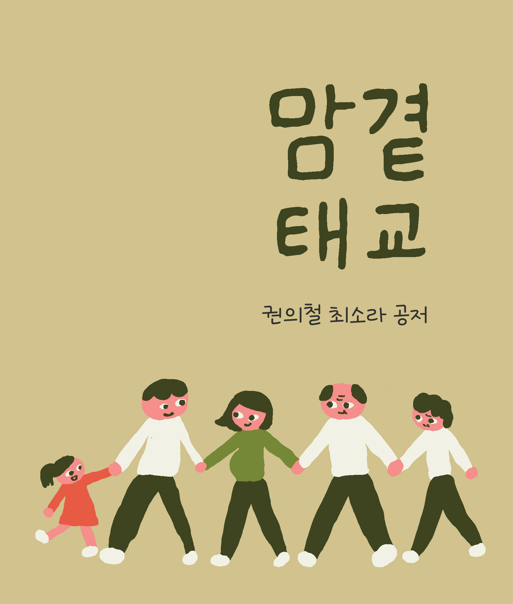
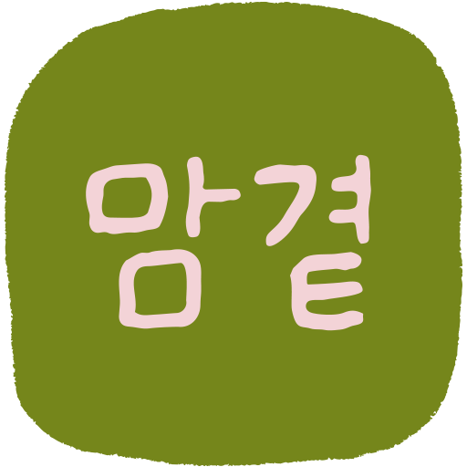
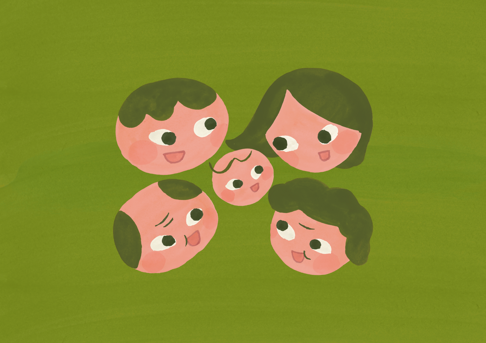

정기 진료와 의료적 동행
임신 초기부터 분만 직전까지 가장 먼저 닿는 자리입니다.
- 산부인과 정기 진료 — 작은 변화도 다음 진료에 한 줄로 메모해 가세요.
- 가까운 보건소 모자건강사업 — 임산부 등록·엽산·철분 지원, 산전 검사 안내.
- 국가건강정보포털 · 모성건강 자료 — 보건복지부 · 질병관리청 공식 가이드 우선.



아이를 기다리는 모든 부모와
그 곁에 함께 머무는 사람들에게.
이 책을 펴는 사람은
대부분 임신 중이거나
임신을 준비하고 있거나,
혹은 곁에 그런 사람을 두고 있을 것입니다.
들어와 주셔서 고맙다는 말을 먼저 남기고 싶습니다.
태교에 대한 책은 이미 많습니다.
이 책은 그중 또 한 권이지만,
한 가지만 다르게 쓰려 했습니다.
무엇을 해야 한다고 가르치는 책이 아니라,
무엇이 이미 일어나고 있는지를 함께 보는 책으로.
잘해야 하는 과제로서의 태교가 아니라,
이해해도 괜찮은 한 시간으로서의 태교를 이야기하는 책으로.
긴 서문을 두지는 않으려 합니다.
이론편은 모두 10장으로 짧게 정리되어 있습니다.
한 번에 다 읽지 않으셔도 좋습니다.
오늘은 한 장만,
혹은 마음이 가는 부분만 천천히 펴 보셔도 충분합니다.
이 책의 어느 한 문장이라도
당신의 어떤 하루를 조금 부드럽게 해 드릴 수 있다면,
이 책은 자기 일을 다 한 셈입니다.
이제 시작하겠습니다.
태교라는 말을 들으면 많은 사람이 먼저 떠올리는 장면이 있다.
잔잔한 음악을 틀어 놓고,
예쁜 그림을 보고,
좋은 글을 읽는 모습이다.
누군가에게는 따뜻하고 아름다운 시간으로 느껴지지만,
또 누군가에게는 막연하고 부담스러운 과제로 다가오기도 한다.
무엇을 해야 하는지 분명하지 않고,
혹시 내가 잘하지 못하면 아이에게 미안한 일이 생길까
걱정되기 때문이다.
그래서 오늘날 태교는 한편으로는 너무 감성적인 이야기로,
다른 한편으로는 너무 많은 정보와 조언 속의 숙제로 남아 있곤 한다.
태교를 조금 다르게 이해해 보면
이 말은 훨씬 편안해진다.
태교는 무엇을 더 많이 해야 하는 경쟁이 아니다.
아이를 맞이하는 동안
엄마와 아기가 어떤 환경 속에 머무는지를 돌아보는 일에 더 가깝다.
다시 말해 태교는 대단한 이벤트가 아니라 관계의 시작이다.
뱃속의 아이는 아직 말을 하지 못한다.
그러나 이미 엄마의 몸과 리듬,
하루의 분위기,
반복되는 소리와 정서 속에서 자라고 있다.
이 사실을 떠올리면
태교는 특별한 기술이라기보다
연결의 감각으로 이해되기 시작한다.
지금 다시 태교를 이야기해야 하는 이유도 여기에 있다.
오늘의 부모는 과거보다 훨씬 많은 정보를 접한다.
검색만 해도 임신 주수별 발달, 음식, 영양, 운동, 감정 관리,
태담, 음악 태교, 독서 태교에 대한 자료가 끝없이 쏟아진다.
정보가 많아진 것은 분명 도움이 되지만,
동시에 무엇이 정말 중요한지 구분하기 어렵게 만들기도 한다.
때로는 태교가
아이의 미래 능력을 높이는 도구처럼 포장되기도 하고,
때로는 엄마의 작은 감정 변화까지
과도하게 불안의 언어로 설명되기도 한다.
그렇게 되면 태교는 엄마의 마음을 편안하게 만드는 일이 아니라
오히려 "잘해야 하는 과제"가 되어 버린다.
오늘 태교를 다시 이야기해야 하는 이유를
조금 더 사회적 자리에서 살펴볼 수 있다.
한국에서 임신과 출산을 둘러싼 환경은
지난 한 세대 동안 크게 바뀌었다.
크게 보면 세 가지 흐름이 겹친다.
한국의 출생아 수와 합계출산율은
지속적으로 낮아져 왔다.2
출산 자체가 흔하지 않은 일이 되면서
임신과 출산을 둘러싼 정보·풍속·관계가
이전 세대처럼 가까이 흐르지 않는다.
임신부가 일상에서 비슷한 경험을 하는 사람을 만나기가
이전보다 어려워졌다.
이 변화 자체를 한탄할 일은 아니다.
다만 한 가지가 함께 따라온다.
임신부가 혼자가 된 듯한 느낌이 들기 쉽다는 점이다.
가까운 사람의 경험을 자연스럽게 빌려 받기 어려운 자리에서
태교를 다시 이야기해야 하는 이유 가운데 하나가 여기에 있다.
같은 기간 동안 산모의 평균 출산연령도 꾸준히 높아져 왔다.
첫 출산을 30대 중반 이후에 맞이하는 비율이
이전보다 훨씬 늘었다.2
평균 연령의 변화는
산모의 건강·심리·사회적 자원의 모양을 함께 바꾼다.
임신을 더 길게 준비하는 자리도 있고,
직장과 임신을 함께 통과해야 하는 자리도 있다.
이 다양한 자리에 한 가지 공통점이 있다.
*임신은 더 이상 자동으로 흘러가는 시간이 아니라
의식적으로 디자인하는 시간이 되어 가고 있다*는 점이다.
세 번째 변화는 정서의 자리다.
임신부와 산모가 임신 중·산후에
정서적 어려움을 경험할 가능성에 대한 사회적 인식이
지난 십수 년 사이에 눈에 띄게 커졌다.
국내 모성건강 보고는
임신 중·산후 우울이 드문 일이 아니다라는 점을 일관되게 시사한다.3
10명 가운데 1~2명 정도가 비슷한 시기를 통과한다고 보면
비교적 가까운 그림이 된다.
이 인식이 커진 자리는
임신부에게 두 가지 의미를 함께 가진다.
**첫째, 내가 이런 마음이 드는 것은 나만의 문제가 아니다라는 안도의 자리.**
둘째, 도움이 필요할 때 그 자리를 알아차리고 손을 내미는 것이 더 자연스러워졌다는 자리다.
| 영역 | 한 세대 전 | 오늘 |
|---|---|---|
| 출생아 수 / 합계출산율 | 비교적 안정 | 지속적 하락 |
| 산모 평균 출산연령 | 20대 후반 중심 | 30대 중반으로 이동 |
| 가구 형태 | 다인 가구 우세 | 1·2인 가구 비중 증가 |
| 임신·출산 정보 | 가족·이웃 구전 중심 | 인터넷·SNS 중심 |
| 산전·산후 정서 | 사회적 인식이 미약 | 의료·공공의 이해 확대 |
세부 수치는 출간 시점의 통계청·보건복지부 발표 자료로 채워진다.
중요한 것은 어느 한 칸의 숫자가 아니라
다섯 칸이 함께 가리키는 한 가지 방향이다.
임신부가 놓인 환경 자체가 달라졌다는 자리.
이 변화를 인정하는 것이
오늘의 태교를 다시 시작하는 출발선이다.
그러나 태교의 핵심은 원래 거기에 있지 않았다.
전통 태교서인 『태교신기』를 보면 —
사실 이 책은 한 사람의 천재성에서 갑자기 나온 것이 아니라,
세종 시대부터 약 400년에 걸쳐 다듬어져 온 흐름의 끝자락에 놓인 책이다 —
태교는 임신 중인 여성이 혼자 모든 것을 수행해야 하는 의무가 아니다.
태아를 둘러싼 환경 전체를 바르게 하는 일로 이해된다.
사주당 이씨는 태아를
임신부 혼자가 아니라
집안 사람들 모두가 함께 조심하고 돌보아야 하는 존재로 보았다.
이 시선은 오늘날에도 깊은 울림을 준다.
아이는 한 사람의 노력만으로 자라는 존재가 아니라
관계와 분위기와 반복되는 생활 속에서 자라기 때문이다.
이 자리를 더 자세히 들여다보는 것이 다음 장의 일이다.
현대 의학과 심리학도 비슷한 방향을 보여 준다.
임신 중 스트레스와 우울은
모-태아 애착이나 임신기 정서적 안정과 관련될 수 있다는 점이
국내·외 모성건강 연구에서 꾸준히 보고되어 왔다.1
임신이 진행될수록 태아의 존재감은 더 선명해지고,
엄마의 심리적 상태 역시 중요한 환경 요소로 다뤄진다.
여기서 중요한 점은
엄마가 한 번도 흔들리지 않아야 한다는 뜻이 아니다.
감정을 이해하고, 조절하고, 회복하는 과정이 중요하다는 사실에 가깝다.
좋은 태교는 한결같은 평온함이 아니다.
흔들림 속에서도 다시 안정의 리듬으로 돌아갈 수 있는 환경을 만드는 일에
더 가깝다.
그래서 지금 우리에게 필요한 태교는
"무엇을 더 해야 하는가"를 몰아붙이는 태교가 아니다.
"무엇이 정말 연결을 만드는가"를 이해하게 해 주는 태교다.
음악을 듣는 일도,
책을 읽는 일도,
배를 쓰다듬는 일도 모두 의미가 있을 수 있다.
다만 그보다 더 중요한 것은
그 행동이 어떤 마음에서 나오고,
엄마와 아기 사이에 어떤 리듬을 만들고,
하루를 얼마나 편안하게 정돈해 주는가이다.
태교는 정보가 아니라 분위기에 가깝고,
활동이 아니라 관계에 가깝다.
맘곁이 이번 이론편에서 말하고 싶은 것도 바로 이 지점이다.
태교는 훌륭한 엄마가 되기 위한 시험이 아니다.
아이를 맞이하는 시간 속에서
몸과 마음과 생활을 조금 더 다정하게 바라보는 연습이다.
어떤 날은 기분이 좋을 수도,
어떤 날은 마음이 복잡할 수도,
어떤 날은 아무것도 하지 못한 것처럼 느껴질 수도 있다.
그럼에도 아이와의 연결은 이미 시작되고 있다.
그 연결을 이해하는 순간
태교는 부담이 아니라 안심이 된다.
이 책은 바로 그 안심에서 출발한다.
먼저 왜 태교를 다시 이해해야 하는지,
무엇이 실제로 엄마와 아기를 이어 주는지,
그리고 전통과 현대가 이 주제를 어떻게 함께 비추는지를
차근차근 살펴보려 한다.
이해의 바탕이 생기면
이후의 실천은 훨씬 부드럽고 자연스럽게 이어질 수 있다.
다음 장에서는 그 이해의 출발점으로
사주당 이씨와 『태교신기』의 자리를 먼저 들여다본다.
오래된 통찰 하나를
오늘의 언어로 다시 펴 보는 일이
이 책의 첫걸음이다.
오늘은 태교에 대한 정보가 어느 때보다 많은 시대다.
임신 주차별 가이드, 태담 예시, 음악 추천, 영양 안내까지
무엇을 해야 할지 알려주는 자료는 끝이 없다.
하지만 자료가 많아질수록 오히려 어려워지는 질문들이 있다.
태교는 왜 중요한가.
무엇이 정말 아이에게 닿는가.
이 모든 일을 엄마 혼자 감당해야 하는가.
이런 질문 앞에서, 200년쯤 전에 쓰인 한 권의 책을 다시 펼쳐 보면
의외로 답에 가까운 시선을 만나게 된다.
그 책의 저자가 사주당 이씨다.
사주당 이씨(師朱堂 李氏, 1739–1821)는 조선 후기를 대표하는
여성 성리학자다.
본관은 전주이며,
태종의 넷째 왕자이자 세종의 스승이었던
경녕군(敬寧君)의 11대손으로 알려져 있다.1
그녀가 남긴 책은 한 권뿐이지만,
그 한 권은 수십 년에 걸친 학문적 삶의 결산에 가깝다.
『태교신기』는 어쩌다 쓴 글이 아니다.
『태교신기(胎敎新記)』.
1800년에 완성되었고,
이듬해 아들 유희가 한글 음을 달아
더 많은 사람이 읽을 수 있도록 정리했다.1
이 책이 오늘까지 다시 읽히는 이유는
저자 자신이 한 사람의 학자로 자기 자리를 갖춘 사람이었기 때문이다.
그녀가 처음 사용한 호는 희현당(希賢堂)이었다.
"현자(賢者)를 희구한다"는 뜻이다.
훗날 그녀는 이 호를 사주당(師朱堂)으로 바꾼다.
"주자(朱子)를 스승으로 삼는다"는 뜻이다.8
이 변경은 단순한 이름 바꿈이 아니다.
현자를 우러러 보는 자리에서
그 현자의 사상을 직접 자기 학문의 기준으로 삼는 자리로
한 칸 옮겨 가는 자기 선언에 가깝다.
조선 사회에서 여성에게 학문의 길이 넓게 열려 있지 않았다는 점을 떠올리면,
이 자기 선언은 그 자체로 깊은 결을 가진다.
전해지는 일화 가운데 하나가 있다.
어릴 적 길쌈과 바느질에 능했던 사주당이
어느 날 바늘을 던지며 한마디를 남겼다고 한다.
"사람이 사람 노릇 하는 것이 어찌 여기에 있겠는가."9
이 한 문장은
그녀가 여성으로서 주어진 자리에 머무르는 것이 아니라
사람으로서 어디에 서 있어야 하는가를 묻기 시작한
한 순간을 보여 준다.
바늘을 놓은 자리에서 그녀는
유교 경전과 성리학의 책들로 손을 옮겼고,
이후 평생을 그 책상 앞에서 살았다.
부친상 때 18~19세의 나이로 3년상을 치르며 효녀로 인정받았던 일도,
같은 시기 그녀가 자기 자리를 학문 쪽으로 옮겨 가던 흐름과
무관하지 않다.
25세이던 1763년,
사주당은 20세 연상의 유한규(柳漢奎)의 네 번째 부인이 되었다.
연상의 학자와의 결혼은
당시로서는 학문적 대화를 이어 갈 수 있는 자리이기도 했다.
이후 30년간 두 사람은
유교 경전을 함께 읽고 토론하는 지우(知友)에 가까운 관계를 이어 갔다.
편지 형식의 학술 논쟁이 여러 차례 오갔고,
그 가운데에는 사주당이 주자의 견해에 반대하며
정자(程子)의 의견을 택한 기록도 남아 있다.
이 사실은 작지만 의미가 깊다.
사주당의 호는 "주자를 스승으로 삼는다"는 뜻이지만,
그녀의 학문은 주자를 무비판적으로 따르는 자리가 아니었다.
스승으로 모시되 필요한 자리에서는 다른 자리를 택할 수 있는,
한 사람의 학자로서 자기 결을 갖춘 모습이 거기에 있다.
처음 태교에 관한 글을 쓴 시점도 이 시기다.
1772년 무렵,
사주당이 적은 글을 남편 유한규가 정리하며
「교자집요(敎子輯要)」라는 이름을 붙였다.
훗날 『태교신기』의 뿌리가 되는 글이다.
사주당의 학문은 가족 안에만 머물지 않았다.
이면눌(李勉訥)·이양연(李亮淵) 같은 젊은 학자들이
직접 그녀를 찾아와 가르침을 청했다는 기록이 전한다.
한원진(韓元震)·송명흠(宋明欽) 같은 거유(巨儒)의 자취와 관련한 일화도
한국학 연구에서 함께 다뤄져 왔다.
당시 여성 학자가 다른 학자들에게 학문적으로 인정받았다는 사실은
그녀의 학문이 가정의 사적인 정성이 아니라
공적 학문 공동체에서도 자리를 가졌다는 점을 보여 준다.
사주당이 자기 학문을 자식 세대에까지 이어 간 자리는 더 또렷하다.
35세에 낳은 아들 유희(柳僖, 1773–1837)는
훗날 한국어 언어학에 큰 자취를 남긴 학자가 된다.
『언문지(諺文志)』와 『물명고(物名攷)』를 비롯한 그의 저작은
한국어 음운과 어휘를 체계적으로 정리한 초기 시도들이다.
가족 안의 학문 네트워크는 여기에서 그치지 않는다.
사주당은 19세기 초 한국 여성 백과사전이라 불리는
『규합총서(閨閤叢書)』를 지은 빙허각 이씨(憑虛閣 李氏)의
외숙모이기도 하다.
사주당 → 유희로 이어지는 직계의 학문과,
사주당과 빙허각으로 이어지는 친족 안 학문의 결이
한 시대의 한 가족 안에서 흐르고 있었다.
사주당을 이야기할 때 종종 신사임당(申師任堂)과 함께 비교된다.
두 인물을 같은 자리에 두기는 어렵다.
신사임당이 성현을 기르는 어머니의 자리에 더 깊이 머물렀다면,
사주당은 스스로 학자가 되는 자리를 향해 한 걸음 더 옮겨 갔다.
이 차이는 우열의 자리가 아니다.
시대의 자리이자 한 사람이 선택한 결의 자리다.
다만 한 가지가 분명해진다.
*『태교신기』를 어머니로서 쓴 글로만 읽기보다,
한 학자가 자식과 후세를 위해 정리한 학문적 결산으로 다시 읽을 때*
이 책이 가진 깊이가 더 또렷하게 보인다는 점이다.
『태교신기』에서 오늘까지 가장 자주 인용되는 한 문장이 있다.
훌륭한 의사는 병이 나기 전에 손을 쓰고,
훌륭한 교사는 아직 태어나기 전에 가르친다.
그러므로 어진 스승의 십 년 가르침도
어머니의 열 달 가르침만 못하고,
어머니의 열 달도 아버지의 하루만 못하다.
>
— 사주당 이씨, 『태교신기』 1장 2절13
이 한 문장이 사주당 학문의 결을 가장 또렷하게 보여 준다.
의학과 교육이 본래 같은 자리에 놓여 있다는 시선,
가장 깊은 가르침은 일이 일어나기 전에 이미 시작된다는 통찰.
이 자리는 200년이 지난 오늘
DOHaD(태아기 환경의 평생 영향) 가설이 도달한 자리와 그리 멀지 않다.
『태교신기』의 영향은 한국에 머물지 않았다.
1932년에는 일본어로 옮겨져
일본의 여중·고등학교에서 한 시기 교과서처럼 읽힌 적도 있다.14
오늘날 한국학·여성학 연구에서는
*여성 학자가 쓴 임신·태교 전문서로서
세계적으로도 매우 이른 시기에 속하는 책*으로 평가하기도 한다.
이런 평가는 이 책의 무게를 짐작케 하는 자리다.
다만 이 책에서는 그 평가를 권위로 두지 않는다.
사주당 자신이 자기 책을 대단한 첫 자리에 두려 했던 사람이 아니라,
있어야 할 자리에 있는 책으로 두려 했던 사람에 가깝기 때문이다.
이 책 전체가 사주당을 권위가 아니라 대화 상대로 마주 두는 자리도
같은 곳에서 나온다.
| 시기 | 사건 |
|---|---|
| 1739년 | 충북 청주 서면 지동에서 출생 (부친 이창식) |
| 18~19세 | 부친상 후 3년상을 치르며 효녀로 인정받음 |
| 1763년 (25세) | 20세 연상의 유한규의 네 번째 부인이 됨 |
| 1772년경 | 첫 태교 관련 글 집필 — 남편이 「교자집요(敎子輯要)」라 명명 |
| 1773년 (35세) | 아들 유희(柳僖) 출산. 이후 세 딸 |
| 1783년 (45세) | 남편 사별. 사남매를 데리고 용인으로 분가 |
| 1800년 | 『태교신기』 완성 |
| 1801년 | 아들 유희가 한글로 음을 달고 발문을 씀 |
| 1821년 | 83세로 별세 |
이 80년 남짓한 생애에서
한 권의 책은 마지막 20여 년의 자리에 놓여 있다.
그 한 권이 어떻게 가능했는지를 묻는 일이
이 장의 자리이기도 하다.
『태교신기』가 특별한 이유는 분량이나 학술적 무게에 있지 않다.
그녀가 태교를 바라본 시선 자체가 다른 책들과 달랐다는 점이다.
조선 시대의 태교는 종종 임신부를 위한 금기 목록처럼 전해졌다.
무엇을 먹지 말고, 무엇을 보지 말고, 어떤 자세로 앉지 말 것.
이런 규범 안에서 임신부는 늘 조심해야 하는 존재로 남기 쉬웠다.
사주당 이씨가 한 일은
이 금기들을 단순히 더 정교하게 다듬는 데에서 그치지 않았다.
그녀는 질문이 머무는 자리를 한 칸 옮겨 놓았다.
태교는 임신부 한 사람이 지켜야 할 규범이 아니라
아이를 맞이하는 사람들 모두가 함께 만들어 가는 환경이라는 시선.
그래서 그녀의 글에는 임신부에게만 향하는 당부 대신
집안의 분위기, 가족의 말과 태도, 부부의 관계,
그리고 아이를 기다리는 마음 전체가 함께 등장한다.
태교는 행동이라기보다 환경에 가깝고,
환경은 한 사람의 일이 아니라 관계의 일이라는 것.
그녀가 200년 전에 이미 이 자리에 서 있었다는 점은
오늘 다시 읽어도 놀랍다.2
『태교신기』를 처음 만나는 사람은 종종 한 가지 인상을 받는다.
200년 전 한 여성 학자가 어느 날 갑자기
이렇게 깊은 통찰을 적어 내려갔다는 사실이
어떻게 가능했을까 하는 인상이다.
그러나 조금 더 들여다보면
이 책은 갑자기 솟아오른 것이 아니다.
사주당 이씨는 자신보다 앞서 흘러온
약 400년의 흐름 위에서
한 칸 옆자리에 발을 옮겨 놓은 것에 가깝다.
그 흐름을 짧게라도 따라가 보면
『태교신기』가 왜 그토록 단단하면서도 따뜻한지가
조금 더 분명하게 보이기 시작한다.
조선에서 태교가 처음으로 글의 형태로 정리되기 시작한 자리는
1434년, 세종 16년이다.
세종은 어의 노중례에게 명하여 『태산요록(胎産要錄)』을 짓게 했다.
임신과 출산, 갓 태어난 아이의 건강을 함께 다룬
조선의 본격적인 첫 전문 의서로 전해진다.4
이 책에서 노중례는
임신 3개월 무렵부터 본격적인 태교를 시작해야 한다고 적었다.
이 시기부터 태아의 형상이 변하기 시작하므로
어머니가 머무는 환경의 결이 그대로 아이에게 새겨진다는 이해였다.
세종이 이 책을 짓게 한 이유는
의학적 호기심만은 아니었다.
좋은 군주는 좋은 환경에서부터 길러진다는 생각,
그리고 그 길을 백성에게도 열어 주어야 한다는 생각이
함께 있었다.
태교는 이때 처음으로
한 가정의 사적인 정성에서 한 발 더 나아가,
국가가 책으로 정리해 다음 세대에 전해야 할
공적인 지식의 자리에 놓이게 되었다.
그로부터 약 170년 뒤, 또 한 번 결이 바뀐다.
1608년, 어의 허준은 선조의 명을 받아
『언해태산집요(諺解胎産集要)』를 펴낸다.
임신과 출산에 관한 핵심 지식을
처음으로 한글로 옮긴 산서로 전해진다.5
2년 뒤인 1610년에는 잘 알려진 『동의보감』이 완성되고,
그 안의 부인문 항목에서
임신부의 몸과 마음을 어떻게 돌볼지가 본격적으로 다뤄진다.
여기서 중요한 변화는
책이 한 권 더 늘었다는 사실이 아니다.
그 전까지 태교에 관한 지식은
한문을 읽을 수 있는 일부 사람들의 자리에 머물러 있었다.
한글본이 등장하면서 비로소
왕실의 여성, 그리고 의녀처럼 실제 돌봄을 맡은 사람들이
그 지식을 직접 읽고 쓸 수 있게 되었다.
태교가 한 걸음 더 사람에게 가까워진 시기다.
조선 후기에 이르면 태교는 책 속의 권고에서 한 발 더 나아가
실제 일상의 절차로 자리를 잡는다.
왕비나 세자빈이 임신을 하면
출산 몇 달 전 산실청(産室廳)이라는 임시 기구가 꾸려졌고,
후궁의 경우에는 호산청(護産廳)이 설치되었다.6
이 기구들은 단지 출산을 돕는 의료 조직만은 아니었다.
임신부의 거처를 정돈하고, 식이를 살피고,
들리는 소리와 만나는 사람을 함께 조절하는 일까지 맡았다.
가장 인상적인 것은
사회 전체가 그 환경의 일부가 된다는 점이다.
임신부가 머무는 동안에는 형벌 집행이 멈추고,
큰 소리가 나는 일도 줄였다고 전해진다.
한 사람의 임신을 한 사람만의 일로 두지 않으려는
오래된 마음이 거기에 담겨 있었다.
같은 시기,
한 왕실 여성에게서 다음 왕실 여성에게
손에서 손으로 전해진 작은 첩이 있었다.
출산 직전부터 산후 백일 무렵까지
무엇을 살펴야 하는지를 순한글로 정리한
『임산예지법(臨産豫知法)』이다.7
이 첩은 오늘날 조선 왕실의 출산 지침을 보여 주는
사실상 유일한 1차 자료로 남아 있다.
이 시기 사대부 가문에서도 같은 흐름이 흐르고 있었다.
태교에 관한 지식과 실천은 왕실에 머물지 않고,
책과 구전을 통해 양반가 여성들의 일상으로
차츰 스며들었다.
사주당 이씨가 『태교신기』를 써 내려간 1800년의 자리는
바로 이 흐름의 끝자락이자, 동시에 새로운 시작이었다.
이 흐름 위에서 보면
『태교신기』의 자리는 더 분명하게 드러난다.
사주당 이씨는 새로운 사실을 처음 발견한 사람이 아니다.
이미 360여 년에 걸쳐 의서와 일상 속에 흩어져 있던 태교의 지혜를,
한 여성 학자의 시선으로 다시 엮어 낸 사람이다.
그녀가 한 일은 크게 세 가지로 정리할 수 있다.
첫째, 흩어진 자료를 정리했다.
의서와 경전, 가문의 경험을 모아
한 권의 본격적인 태교서로 묶어 냈다.
둘째, 태교의 자리를 옮겼다.
이전까지 태교가 왕실과 일부 사대부 가문의
정성스러운 절차의 자리에 머물렀다면,
그녀의 책에서는 임신부 한 사람만의 의무도,
신분이 높은 사람만의 일도 아닌
가족 전체의 환경의 문제로 다시 놓였다.
셋째, 글의 결을 다정하게 바꾸었다.
같은 권고라도 그것이 누구의 자리에서,
어떤 마음으로 쓰였느냐에 따라
받는 사람의 느낌은 달라진다.
사주당 이씨의 문장은
임신부를 감시하는 자리가 아니라,
함께 아이를 기다리는 사람의 자리에 서 있다.
이 세 가지가 더해졌기에
『태교신기』는 오늘까지도 다시 읽힌다.
의서의 권위에 기대지 않고,
한 가정의 풍경 안으로 태교를 데려다 놓은 책이기 때문이다.
맘곁이 사주당 이씨를 이 책의 앞자리에 둔 이유도
같은 자리에 있다.
그녀의 통찰은 한 사람의 천재성이 아니라,
오랜 시간에 걸쳐 다듬어진 한 사회의 마음이
한 사람을 통해 정리된 결과에 가깝다.
그래서 우리도 이 책을 권위로 펼치지 않는다.
400년의 흐름이 사주당 이씨에게 닿았듯이,
그녀의 시선이 오늘의 부모에게 다정하게 닿을 수 있다면,
태교는 다시 한 번
한 사람의 무게가 아니라
함께 만들어 가는 환경으로 돌아올 수 있다.
『태교신기』 35절을 모두 옮길 수는 없지만,
이 책 전체의 결을 보여 주는 12절을 발췌하면 다음과 같다.2
풀스펙 매핑은 부록 A에 따로 두었다.
| 절 | 핵심 메시지 | 본 권에서 다시 만나는 자리 |
|---|---|---|
| 1-1 | 사람의 성품은 하늘을 본받고, 기질은 부모에게서 받는다 | 1·8장 부모 환경 |
| 1-3 | 태교의 책임은 오로지 아버지에게 있다 | 8장 아빠의 태교 |
| 1-4 | 자궁은 원초적 교육 환경이다 | 3·5장 태아 발달 |
| 2-1 | 사람의 성품은 임신 전부터 이루어진다 | 4장 임신 전 케어 |
| 4-1 | 태교는 온 가족이 함께 / 칠정은 장부에 직접 영향 | 7장 가족의 태교 |
| 4-4 | 듣는 것을 삼가야 / 시 읊는 소리·책 읽는 소리가 좋다 | 5장 청각 |
| 4-5 | 7가지 삼갈 마음 — 정서 자기관찰 | 6장 엄마의 감정 |
| 4-10 | 임신부의 보행 / 적당한 운동과 휴식 | 4장 운동 |
| 4-11 | 임신부의 잠자는 법 / 만삭 시 좌우 교대 | 4장 잠과 쉼 |
| 5-1 | 태교의 요점은 삼가 함(愼)에 있다 | 10장 두 번째 원칙 — 반복 |
| 9-1 | 옛 사람은 옥판에 새겨 보관했다 | 10장 세 번째 원칙 — 기록 |
| 10-1 | 태교의 책임은 장부에게 있다 | 8장 아빠의 태교 |
표가 보여 주는 한 가지가 있다.
35절 가운데 어머니에게만 향한 절은 의외로 많지 않다는 사실이다.
첫 절(1-3)과 마지막 절(10-1)이 모두 아버지의 자리를 가리키고,
가운데 절(4-1)은 온 가족의 자리를 가리킨다.
이 책 전체를 관통하는 자리도 같은 곳에 있다.
『태교신기』 전체를 한 문장으로 요약하기는 어렵지만,
오늘의 독자가 가져갈 만한 시선은 크게 세 가지다.
첫째, 태교는 엄마 혼자만의 일이 아니다.
가족의 분위기와 부부의 관계,
주변 사람들이 만들어 내는 공기 전체가
태아가 머무는 환경의 일부가 된다.
둘째, 마음과 몸은 분리되지 않는다.
임신부의 정서, 일상의 리듬, 받는 돌봄의 결이
그대로 태내 환경의 질을 만든다.
그러므로 태교는 어떤 행위를 추가하는 일이라기보다
이미 흐르고 있는 생활을 부드럽게 정돈하는 일에 가깝다.
셋째, 태아는 이미 관계 속의 존재다.
가르침이 시작되는 시점은 출생 이후가 아니다.
아이가 어떤 환경 안에서 자라기 시작하는가가
이미 한 사람의 첫 경험을 만든다.
이 세 가지는 오늘의 임신과 출산에서도 여전히 유효한 질문으로 남는다.
물론 그녀가 살았던 세계는 지금과 다르다.
임신과 출산을 둘러싼 가족 구조도, 의학적 이해도,
여성에게 주어진 자리도 모두 달라졌다.
그러므로 『태교신기』에 적힌 모든 항목을
오늘날의 처방처럼 그대로 옮길 수는 없다.
하지만 그녀가 짜놓은 큰 틀,
곧 "태교는 관계이며, 환경이며, 마음가짐이다"라는 시선은
지금도 충분히 새롭게 읽힌다.
현대 의학과 심리학도 비슷한 방향을 가리킨다.
태아는 자궁이라는 한 사람의 신체 안에 있지만,
실제로는 엄마의 리듬과 정서, 관계, 생활 전체를 환경으로 두고 자란다.
가족과 주변 사람들이 만드는 공간의 질감,
임신부가 받는 지지의 정도,
하루의 안정감과 회복의 기회까지가
태아가 머무는 환경의 일부가 된다.3
이 점에서 사주당 이씨의 시선과 현대의 이해는 같은 곳을 바라본다.
그녀가 단정으로 말한 부분을 우리는 가능성으로 풀어 읽고,
그녀가 시대적 한계 안에서 표현한 부분을 우리는 다른 언어로 다시 옮길 뿐이다.
전통이 옳고 과학이 그것을 증명했다는 식의 단순한 정리보다는,
서로 다른 시대의 두 시선이 같은 자리에서 만나
오늘의 부모에게 도움이 되는 이해로 이어진다고 보는 편이 더 정직하다.
맘곁이 사주당 이씨를 이 책의 앞자리에 두는 이유는
"옛 어른의 가르침을 따르라"고 권하기 위해서가 아니다.
오히려 반대다.
사주당 이씨는 우리에게 답을 주지 않는다.
그녀는 좋은 질문을 남겼을 뿐이다.
태교는 누구의 일인가.
무엇이 아이에게 닿는가.
어떤 환경 속에서 한 생명이 자라기 시작하는가.
이 질문은 오늘의 우리도 여전히 안고 있다.
그래서 맘곁 태교는 그녀의 책을 권위로 모시기보다
대화 상대로 마주 두기로 했다.
200년 전의 통찰과 오늘의 의학,
한 여성 학자의 글과 지금의 부모가 받는 정보가
같은 자리에서 만날 수 있다면,
태교는 비로소 더 부드럽고 더 분명한 모습으로 다시 시작될 수 있다.
다음 장에서는 그 만남의 한쪽,
즉 현대 의학이 보는 태아의 발달과 환경에 대해 천천히 따라가 본다.
사주당 이씨가 "환경"이라 불렀던 자리를
오늘의 언어로는 어떻게 설명할 수 있는지를
조심스럽게 풀어 보려 한다.
전통이 먼저 도착해 있던 자리에
현대 의학이 어떤 방식으로 자기 언어를 보태는지를 보면,
태교라는 말이 조금 더 단단하게,
그러나 여전히 따뜻하게 손에 잡히기 시작할 것이다.
태교를 이야기할 때 가장 먼저 떠오르는 오해가 있다.
무엇을 많이 보여 주고 많이 들려주면
아이가 더 똑똑하고 더 뛰어난 존재로 자란다는 생각이다.
이 시선은 태교를 결과 중심으로 본다는 점에서
오랫동안 익숙하게 자리 잡아 왔다.
그러나 현대 의학과 관련 연구가 가리키는 방향은 이보다 섬세하다.
태아는 자궁 안에서 점차 감각을 발달시키고,
엄마의 몸과 리듬, 정서적 상태, 반복되는 생활 환경 속에서 자란다.
태교의 핵심은 무엇을 얼마나 많이 주입하느냐가 아니라,
아이가 어떤 환경 속에 머무는가를 이해하는 일에 더 가깝다.
태아의 발달을 이해할 때 도움이 되는 큰 그림이 하나 있다.
임신 초기는 신경관과 신경세포의 기본 골격이 만들어지는 시기이고,
중기는 시냅스가 폭발적으로 늘어나며 감각계가 자리를 잡아 가는 시기이며,
후기는 신경세포 사이의 연결이 다듬어지고
미엘린화 같은 정교화 과정이 진행되는 시기다.2
이 큰 흐름은 발생학과 태아 발달학 교과서에서 일반적으로 다루는 내용이다.
세부 시기와 속도는 사람마다 다르지만 한 가지는 공통된다.
태교라는 말이 가리키는 환경의 영향은
어느 한 시점에서 단번에 결정되는 것이 아니라
임신 전 기간에 걸쳐 천천히, 그러나 꾸준히 흐른다는 사실이다.
다음 표는 임신 시기에 따른 신경계·감각계·운동 발달의
일반적 흐름을 한눈에 보기 위한 것이다.6
표 안의 시기는 평균적인 흐름이며,
실제 태아의 발달 속도는 사람마다 다르다.
| 시기 | 신경계 | 청각 | 시각 | 촉각·운동 | 미각·후각 |
|---|---|---|---|---|---|
| 1분기 (1–13주) | 신경관 형성, 뇌·척수 기본 골격 | 와우관 형성 시작 | 안구 기본 구조 형성 | 초기 자발적 움직임 시작 | 미각·후각 수용체 형성 시작 |
| 2분기 초반 (14–22주) | 시냅스 형성 활발 | 청각계 구조 자리잡음, 외부 소리 점차 반응 | 안검 분리, 빛 자극 인지 시작 | 양수 안에서 자기 몸 만지기 | 양수 향에 노출 시작 |
| 2분기 후반 (23–27주) | 대뇌피질 주름 형성 | 모성 음성 인식 점차 또렷 | 빛에 미세 반응 | 손가락 빨기·발 차기 | 양수 향·맛 학습 |
| 3분기 (28–40주) | 미엘린화 진행, 신경 연결 정교화 | 친숙한 소리·낯선 소리 구별 | 강한 빛에 미세 반응 | 수면-각성 주기 등장 | 출생 후 미각·후각 선호와 연결 |
표의 각 칸은 그 시기에 모든 태아가 똑같이 같은 일을 한다는 뜻이 아니다.
환경의 결이 어떤 자리에 닿을 수 있는지를 보여 주는 표지에 가깝다.
1분기에는 엄마 자신의 영양·휴식·정서 안정이 중심이고,
2분기로 갈수록 청각·촉각의 결이 또렷해지며,
3분기에는 반복되는 소리·정서·생활 리듬이 태아에게 또 다른 환경이 된다.
태아의 발달이 시간성을 가지듯,
엄마와 태아 사이의 관계도 시간 속에서 깊어진다.
국내 간호학·모성건강 분야의 모-태아 애착 연구는
임신이 진행될수록
엄마가 아이를 한 사람의 존재로 인식하는 정도가
점진적으로 깊어지는 경향이 보고된다는 점을 보여 준다.1
태아가 실제로 더 자주 느껴지고,
엄마 역시 신체와 정서의 변화 속에서
아이를 의식하는 시간이 늘어나기 때문이다.
그러므로 태교는 어느 한순간 갑자기 시작되는 특별한 행위가 아니라,
임신의 진행과 함께 서서히 깊어지는 관계라고 볼 수 있다.
태아의 감각 발달 가운데 가장 자주 이야기되는 것은 청각이다.
와우관(달팽이관)과 청신경의 기본 구조는
임신 중기 무렵까지 형성되는 것으로 알려져 있고,
이후 점차 외부 자극에 반응할 수 있는 상태로 성숙한다.2
여기서 한 가지 흥미로운 점이 있다.
자궁 안의 음향 환경은
우리가 듣는 바깥 세계와 같은 모습이 아니라는 사실이다.
양수와 모체의 조직, 자궁벽은 저주파를 비교적 잘 전달하지만
고주파는 상당 부분 감쇠시키는 특성을 가진다.
그래서 태아에게 가장 안정적으로 닿는 소리는
엄마 자신의 심장 박동과 혈류처럼 반복되는 저주파 배경음이고,
그 위에 비교적 낮은 음역대를 포함한 엄마의 목소리가 얹힌다.
이 음향적 특성 때문에
"어떤 음악이 가장 좋은가"라는 질문은
대부분의 음악이 자궁 안에서 대체로 흐릿하게 변환된다는 사실 앞에서
자연스럽게 무게가 줄어든다.
음악의 종류보다 또렷이 닿는 것은
엄마의 목소리, 가족의 대화,
하루 동안 반복되는 생활의 리듬이다.
그래서 청각 태교를 말할 때
특별한 프로그램보다 일상의 목소리,
차분한 대화, 안정적인 생활 리듬이 먼저라는 점은
다시 강조할 만하다.
다음 표는 자궁 안의 청각 환경이
바깥 세계와 어떻게 다른지를 한눈에 보기 위한 것이다.6
| 항목 | 자궁 안에서의 결 | 의미 |
|---|---|---|
| 배경음 | 모체의 심장 박동·혈류·소화음 (저주파 반복) | 늘 같은 결의 안정된 환경 |
| 외부 소리 전달 | 양수·복벽이 저주파를 비교적 잘 전달, 고주파는 감쇠 | 외부 음악이 흐릿하게 변환됨 |
| 모성 음성 | 골 전도를 통해 비교적 또렷이 전달 | 태아가 가장 일관되게 만나는 소리 |
| 부성 음성 | 저음 위주로 일부 전달 | 가족 음성 환경의 일부 |
| 시기별 반응 | 임신 중기 무렵부터 반응 시작, 후기에 친숙·낯선 소리 구별 | 발달의 결을 따라 점차 깊어짐 |
| 효과적 자극 | 음악 종류 자체보다 반복되는 일상의 결 | 정서가 실린 일상의 소리 |
이 표가 가리키는 한 가지가 있다.
*자궁 안에서 가장 또렷이 닿는 소리는 외부 음악이 아니라
모체 자신의 몸과 목소리, 그리고 그 곁의 일상이라는 사실*이다.
청각 태교가 음악 선곡표보다
일상의 목소리·대화·리듬에 가까워야 하는 이유가 여기에 있다.
현대 의학과 심리학이 함께 주목하는 또 다른 축은
임신 중 엄마의 정서다.
임신 중 스트레스와 우울은
단지 엄마 개인의 기분 문제로만 다뤄지지 않는다.
국내 모성건강 분야의 여러 연구는
임부의 스트레스·우울 수준이
모-태아 애착이나 태아 건강과 무관하지 않다는 점을 시사한다.3
이 관계가 어떤 통로를 통해 일어나는지는
여전히 활발히 연구되는 영역이다.
연구자들은 임신 중 모체의 스트레스 반응 —
시상하부-뇌하수체-부신(HPA) 축의 활성화와 코르티솔 분비의 변화,
자율신경계 변화 등 — 이
태내 환경의 신호를 바꿀 수 있는
가능한 통로 가운데 하나로 제안해 왔다.4
다만 그 통로 가운데 어떤 것도
단정적으로 모두 밝혀진 상태는 아니다.
무엇보다 연구는
부정적 감정이 곧바로 나쁜 결과로 이어진다는 식의
단순한 인과를 지지하지 않는다.
오히려 다양한 연구가 함께 가리키는 방향은 보호 요인 쪽이다.
사회적 지지와 부부 관계의 안정,
정서를 조절하고 회복할 기회,
산전 우울에 대한 적절한 돌봄은
임신기의 정서 환경을 누그러뜨리는 보호 요인으로 작용할 수 있다.
다시 말해, 좋은 태교는
한 번도 흔들리지 않는 평온함이 아니다.
누구나 임신 기간에는 몸의 변화, 미래에 대한 걱정,
관계의 변화, 출산과 양육에 대한 두려움을 경험할 수 있다.
중요한 것은 그 감정을 혼자 끌어안는 대신
이해하고, 조절하고, 회복할 수 있는 환경이 곁에 있는가이다.
태아가 자궁 안에서 무엇을 경험하는지를 직접 묻기는 어렵다.
그래서 연구자들은 종종 출생 직후의 신생아 행동에서
거꾸로 단서를 읽어 왔다.
신생아가 낯선 사람의 목소리보다
자기 어머니의 목소리에 더 강하게 반응한다는 보고는
이 영역의 고전적 연구 가운데 하나로 꼽힌다.5
양수와 모유를 통한 향 노출이
출생 후 영아의 후각·미각 경험에 영향을 줄 수 있다는 관찰도
오랫동안 이어져 왔다.
(이 부분은 5장에서 좀 더 자세히 다룬다.)
이런 단서들은 강력한 인과를 증명하지 않는다.
다만 한 가지를 분명히 가리킨다.
태아가 자궁 안에서 경험한 환경은
출생이라는 경계선에서 갑자기 사라지지 않는다는 사실이다.
어떤 형태로든 다음 시기로 이어진다.
이 지점에서 사주당 이씨가 본 자리와
현대 의학이 본 자리는 의외로 가까이 닿는다.
전통 태교가 이야기한 몸가짐과 마음가짐,
집안의 분위기, 말과 행동의 조심스러움은
오늘날의 표현으로 옮기면
정서적 환경, 관계의 안정, 사회적 지지의 의미와 만난다.
현대 연구는 이 자리를
호르몬과 스트레스, 애착, 발달이라는 언어로 풀고,
전통은 같은 자리를
삶의 태도와 환경의 언어로 풀었을 뿐이다.
두 설명은 분명히 다르지만, 가리키는 방향은 같다.
아이는 처음부터 관계 속에서 자란다.
현대 의학이 보여 주는 태교는 결코 어려운 과학 실험이 아니다.
오히려 엄마가 너무 많은 정보를 짊어진 채 자신을 몰아붙이지 않고,
몸의 신호를 살피고, 충분히 쉬고, 주변의 지지를 받으며,
반복되는 안정감을 만들어 가는 일에 더 가깝다.
식사, 수면, 호흡, 목소리, 대화, 산책, 휴식.
이 작은 요소들이 태아에게는 하나의 환경이 된다.
환경이 언제나 한결같을 수는 없어도,
충분히 따뜻하고 예측 가능할 수는 있다.
맘곁이 말하는 "마음이 편안해지는 구조"도 바로 여기에서 나온다.
태교는 아이를 더 우수하게 만들기 위한 프로젝트가 아니라,
엄마와 아기가 함께 머무는 환경을 부드럽게 조율하는 일이다.
다음 장에서는 이 환경의 결을
오감의 언어로 더 가까이 들여다본다.
오감은 태아에게 무엇을 주입하는 통로가 아니라,
엄마와 아기가 서로를 느끼는 길이다.
이 시선을 가지고 다음 장을 따라가면,
청각·촉감·냄새·맛·시각이 왜 모두 정서와 연결되는지가
조금 더 분명하게 보이기 시작한다.
이 장은 의학적 처방이나 개별 진료를 대신하지 않는다.
모든 임신은 사람마다 다르고,
식생활·운동·생활 리듬에 관한 구체적 결정은
산부인과 진료에서 의료진과 함께 내려야 한다.
이 장이 하는 일은
전통 태교가 권했던 일상의 자리를
오늘의 언어로 함께 비춰 보는 데 머문다.
또한 이 장은
이미 정해진 식단을 지키지 못한 적이 있거나
운동을 충분히 하지 못한 독자를 비난하지 않는다.
임신 중 일상은 흔들리기 쉬운 시간이다.
중요한 것은 한 번도 흔들리지 않는 완전함이 아니라,
다시 안정의 결로 돌아갈 수 있는 흐름이다.
『태교신기』를 다시 펼치면 흥미로운 자리가 있다.
사주당 이씨는 임신부의 일상을
단순한 금기 목록으로 보지 않았다.
무엇을 먹고, 어떻게 움직이고,
무엇을 보고 듣고, 어떤 마음으로 자고 깨는지가
모두 태아가 머무는 환경의 일부라고 보았다.
당시의 권고를 오늘 그대로 옮길 수는 없다.
시대마다 의학과 영양에 대한 이해가 다르고,
여성의 일과 일상도 달라졌기 때문이다.
그러나 사주당이 가리킨 큰 시선,
즉 "임산부의 하루 전체가 곧 태아의 환경"이라는 자리는
지금도 유효하다.3
다음 표는 『태교신기』가 강조한 일상의 영역을
오늘의 언어로 옮긴 해석과 함께 나란히 둔 것이다.
세부 항목보다는 결의 차이를 함께 읽어 보길 바란다.
| 영역 | 『태교신기』가 강조한 자리 | 오늘의 언어로 옮긴 해석 |
|---|---|---|
| 식생활 | 자극이 강한 음식과 절제되지 않은 식사 회피 | 균형 잡힌 영양, 카페인·알코올·날것 등의 회피 권고 |
| 움직임 | 단정한 자세, 무리한 활동 회피 | 의료진과 상의한 적정 강도의 운동, 낙상·충격 회피 |
| 잠과 쉼 | 충분한 휴식, 무리한 노동을 줄임 | 충분한 수면, 좌식·기립 시간의 균형, 과로 의식 |
| 보고 듣는 것 | 자극적이거나 불안한 것을 피함 | 과도한 정보·뉴스 부담의 의식적 관리 |
| 마음가짐 | 놀람·분노·근심을 줄이고 평정을 유지 | 정서를 조절·회복할 수 있는 환경 (6장에서 자세히) |
| 환경 | 집안의 분위기와 가족의 태도 | 가족·사회적 지지 (7장에서 자세히) |
이 표가 보여 주는 한 가지가 있다.
사주당이 본 영역과 오늘 우리가 살피는 영역이
크게 다르지 않다는 사실이다.
표현이 바뀌었을 뿐,
같은 자리들이 여전히 임신 중 일상의 결을 만든다.
임신 중 식생활은 흔히
"무엇을 먹어야 하는가"라는 질문으로 시작된다.
주요 영양 가이드는 일반적으로
균형 잡힌 식사,
충분한 단백질·철분·엽산·칼슘 등의 섭취,
규칙적인 식사 시간을 권한다.
또한 카페인·알코올, 날것이나 충분히 익히지 않은 음식 등
주요 의학 단체들이 일반적으로 권하는 회피 항목이 있다.1
구체적인 양과 종류는 사람마다 다를 수 있고,
임신 전후의 건강 상태와도 관련된다.
그러므로 자세한 결정은 산부인과 진료에서 함께 내려야 한다.
여기서 한 가지 짚어 두고 싶은 점이 있다.
식생활이 좋은 태교가 되는 결은
"정해진 식단을 완전히 지킨다"는 사실에 있지 않다.
"오늘의 식사가 나와 아기를 함께 돌보고 있다"는 감각에 더 가깝다.
지나친 검열과 죄책감은 식사 자체의 결을 굳게 만든다.
때로 먹지 못한 날도 있고,
때로 평소와 다른 음식을 먹은 날도 있을 수 있다.
그런 하루를 길게 자책하기보다,
다음 식사를 천천히 정돈하는 흐름이
실제로 더 안정된 환경을 만든다.
사주당이 권한 "절제된 식사"의 결도
이 자리에 가깝다고 읽어도 좋다.
지나친 자극을 피하고
편안한 마음으로 천천히 식사하는 일이
당시의 언어로는 "절제"였고,
오늘의 언어로는 "안정"에 가깝다.
다음 표는 임신 중 식생활의 일반 흐름을 세 갈래로 정리한 것이다.1
구체적 양·종류는 사람마다 다르므로
세부 결정은 산부인과 진료에서 의료진과 함께 내린다.
| 자리 | 일반적 권고의 결 | 비고 |
|---|---|---|
| 균형 — 매일의 토대 | 다양한 채소·과일·전곡류·단백질·유제품, 충분한 수분 | 끼니마다 모든 군을 갖출 필요는 없음. 일주일 단위의 균형이 더 실제적 |
| 보강 — 임신 시기 보충 | 엽산(임신 전~12주), 철분·칼슘 등 의료진 안내에 따른 보충 | 보충제는 산부인과 처방 우선 |
| 회피 — 의학 단체의 일반 합의 | 알코올, 흡연, 날것·미가공 유제품, 일부 고수은어류, 미숙성 육류 등 | 카페인은 권장 한도 안에서 조절 |
표의 핵심은 모든 칸을 빠짐없이 채우는 것이 아니다.
*어떤 칸이 비어 있는지 알아차리고
부드럽게 다음 식사로 옮겨 가는 결*을 만드는 데 있다.
임신 중 운동은 대부분의 임신부에게 권장되는 영역이다.
주요 산부인과 학회와 의료 가이드는
합병증이 없는 임신의 경우
중간 강도의 유산소 활동과 가벼운 근력 운동이
임신 중·후의 회복에 도움이 될 수 있다고 안내한다.2
다만 이 권장은 모든 임신에 동일하게 적용되지 않는다.
조산 위험, 자궁경부 무력증, 심혈관 문제, 다태 임신 등
의학적 사정에 따라 운동 권고가 달라질 수 있다.
그러므로 임신 중 운동의 종류와 강도는
산부인과 진료에서 의료진과 함께 결정해야 한다.
실제 일상에서는
정해진 운동 프로그램을 강박적으로 따르는 일보다
"오늘의 몸 상태에 맞는 만큼"
가볍게 움직여 보는 태도가 훨씬 부드럽다.
짧은 산책,
앉아서 어깨와 목의 긴장을 푸는 가벼운 동작,
기분이 좋을 만큼의 스트레칭은
모두 운동의 결을 만든다.
사주당이 강조한 "단정한 자세"의 결도
오늘의 운동·자세 관리와 닿아 있다.
긴장이 누적된 자세를 자주 풀어 주고,
자기 몸의 신호를 자주 살피며,
지나치게 무리하지 않는 태도가
임신 중의 몸을 부드럽게 지키는 길이다.
| 자리 | 일반적으로 권장되는 결 | 의료진 상의가 더 권장되는 결 |
|---|---|---|
| 강도 | 가볍거나 중간 강도(대화 가능한 정도) | 고강도 인터벌·격렬한 경쟁 운동 |
| 종류 | 걷기, 임산부 요가·필라테스, 수영 | 격투기·극한 스포츠, 충격 강한 종목 |
| 시간·빈도 | 짧은 시간 자주 또는 의료진 안내 범위 | 장시간 무리한 일정 |
| 자세 | 균형 잡힌 자세, 자주 휴식 | 등을 굽히고 오래 머무는 자세 |
| 환경 | 미끄럼 없는 평탄한 곳, 시원한 환기 | 더운 환경, 낙상 위험 높은 자리 |
이 표 역시 모든 임신부에게 똑같이 적용되는 처방이 아니다.2
조산 위험·자궁경부 무력증·심혈관 사정 등에 따라 권고가 달라질 수 있으므로
구체적 종류·강도는 산부인과 진료에서 함께 결정한다.
임신 중 잠은 흔히 흐트러지기 쉬운 영역이다.
호르몬과 신체의 변화,
편하지 않은 자세, 잦은 화장실 출입 등이
숙면을 어렵게 만들 수 있다.
사주당이 강조한 "충분한 휴식, 무리한 노동을 줄임"의 자리는
오늘의 일터·가정에서도 여전히 유효하다.
임신 중에는 깨어 있는 시간의 강도와
쉬는 시간의 결을 함께 살피는 일이 중요하다.
잠은 양만으로 보지 않는 편이 좋다.
밤 시간의 수면, 짧은 낮잠,
자세를 풀어 주는 휴식의 시간이
하루의 안정감을 함께 만든다.
정해진 수면 시간을 한결같이 지키는 일보다
"오늘 내가 충분히 쉬었는가"라는 질문을
스스로에게 자주 던지는 일이 더 실제적이다.
휴식이 길게 어려워지거나
일상에 지장을 줄 만큼 수면 문제가 누적될 때는
주저하지 말고 산부인과·정신건강 전문가와 상의하는 것을 권한다.
사주당이 강조한 항목 가운데
오늘 다시 읽으면 신선한 자리가 하나 있다.
"보고 듣는 것을 가린다"는 자리다.
당시 그 표현은
부정한 것이나 자극적인 장면을 피하라는 뜻에 가까웠다.
오늘의 언어로 옮기면
지나치게 자극적인 영상,
끝없이 흘러오는 부정적 뉴스,
검색을 끝없이 반복하게 만드는 정보의 흐름을
의식적으로 관리하는 자리에 가깝다.
정보를 끊으라는 뜻이 아니다.
필요한 정보는 받아들이되,
오늘 하루 내 마음을 흔들 만큼의 양은 아닌지를
스스로 살피는 흐름이다.
자극의 양을 조절하는 일은
임신 중 정서 환경을 지키는 가장 단순한 방법 가운데 하나다.
식생활도, 운동도, 잠과 쉼도, 보고 듣는 것도
결국 한 가지 질문으로 모인다.
오늘 나의 일상이 어떤 결로 흐르고 있는가.
사주당의 시선이 가리킨 자리는 바로 거기다.
어느 한 항목을 완전히 지키는 일이 태교가 아니라,
그 모든 항목이 함께 흐르는 하루의 결이 곧 태교라는 자리.
맘곁 태교가 말하는 "마음이 편안해지는 구조"도
바로 이 일상의 자리에서 출발한다.
거창한 행위 하나가 아니라,
어제와 오늘과 내일이 비슷하게 다정할 수 있는 흐름.
그 흐름이 태아가 머무는 환경의 가장 기본적인 결이 된다.
다음 장에서는 이 일상의 결이
어떻게 오감의 언어로 태아에게 닿는지를 좀 더 가까이 본다.
일상이 환경의 큰 그림이라면,
오감은 그 환경의 결을 따라가는 작은 길이다.
두 자리는 결국 같은 흐름의 다른 이름이다.
태아를 떠올릴 때 우리는 종종 작은 몸의 형태부터 상상한다.
초음파 사진 속 흐릿한 윤곽, 손가락과 발가락의 모양,
조금씩 또렷해지는 얼굴 같은 것들이다.
그러나 아이는 이미 몸의 형태만이 아니라
감각과 리듬을 통해 세상을 만나고 있다.
자궁 안은 흔히 상상하는 것처럼
완전히 어둡고 조용한 공간이 아니다.
혈류의 소리, 엄마의 심장 박동, 소화 기관의 움직임,
가까이서 들리는 엄마의 목소리,
조금 멀리서 다가오는 바깥의 소리가 함께 섞여 있는 환경이다.
태아의 감각은 이 환경 안에서 조금씩 자라난다.
오감으로 태교를 본다는 것은
이 세계를 잠시 함께 상상해 보는 일에서 시작된다.
태아는 자궁 안에서 한꺼번에 다 자라지 않는다.
시간이 흐르면서 신체의 기본 골격, 신경계, 감각이
저마다 다른 속도로 자리를 잡아 간다.
다음 표는 임신 1분기·2분기·3분기에 걸쳐
태아가 어떻게 자라고 어떤 감각이 자리 잡아 가는지를 한눈에 정리한 것이다.2
세부 시기와 속도는 사람마다 다를 수 있고,
이 표는 일반적인 흐름을 보여 주기 위한 것이다.
| 시기 | 신체·신경계 발달의 큰 흐름 | 자리 잡아 가는 감각 | 엄마의 환경이 닿는 결 |
|---|---|---|---|
| 1분기 (1–13주) | 신경관과 심장·기관의 기본 골격 형성 | 감각계 자체가 아직 형성 중 | 엄마의 영양·휴식·정서 안정 |
| 2분기 (14–27주) | 시냅스가 빠르게 늘어나고 감각계가 자리를 잡음 | 촉각·전정감각이 활성화되고 청각이 점차 반응을 시작 | 엄마의 목소리·생활 리듬·움직임 |
| 3분기 (28–40주) | 신경세포 연결의 정교화와 미엘린화 진행 | 청각이 성숙하며 소리를 구별하기 시작, 양수를 통한 향·맛 노출, 빛에 미세 반응 | 엄마의 정서·반복되는 일상·가족 분위기 |
이 표가 보여 주는 한 가지가 있다.
태교는 어느 한 시점에 갑자기 작동하는 일이 아니라,
임신의 처음부터 끝까지 결을 다르게 가지면서 이어지는 과정이라는 사실이다.
1분기에는 엄마 자신의 몸과 마음을 돌보는 일 자체가 곧 태교다.
2분기와 3분기로 갈수록 감각의 결과 정서적 환경이
태아에게 더 또렷하게 닿는다.
다섯 감각이 어떻게 자리 잡고
어떤 통로로 엄마와 만나는지를 다음에서 차례로 살펴본다.
가장 먼저 떠올릴 수 있는 감각은 소리다.
청각계의 기본 구조는 임신 중기 무렵까지 자리 잡는 것으로 알려져 있고,
이후 점차 외부 소리에 반응할 수 있는 상태로 성숙한다.
3분기로 접어들면 태아는
친숙한 소리와 그렇지 않은 소리를 구별하기 시작하는 것으로 보고된다.2
엄마의 심장 박동, 혈류, 숨 쉬는 소리는
태아에게 늘 반복되는 배경음이 된다.
그 위에 엄마의 말소리, 가족의 대화,
일상의 생활 소리가 더해진다.
여기서 중요한 것은
태아가 특정한 단어의 의미를 이해한다는 점이 아니다.
태아가 느끼는 것은 소리의 리듬과 강도, 분위기에 더 가깝다.
그래서 소리 태교를 떠올릴 때
첫 질문은 "어떤 음악이 좋은가"가 아니라
"오늘 우리에게 안정감을 주는 리듬은 어떤 것인가"가 된다.
특별한 클래식 음악이 아니라,
엄마가 편안함을 느끼는 곡,
마음이 조금 느긋해지는 목소리,
지나치게 자극적이지 않은 생활의 소리들이 더 도움이 될 수 있다.
무엇보다 중요한 것은 반복성과 예측 가능성,
그리고 그 안에 담긴 정서다.
아이는 잘 짜인 선곡표보다
자주 반복되는 엄마의 목소리와 생활의 리듬 속에서
자신만의 안정을 만들어 간다.
임신부는 듣는 것을 삼간다.
시 읊는 소리와 책 읽는 소리가 좋다.
— 사주당 이씨, 『태교신기』 4장 4절
200년 전 사주당이 권한 자리도
같은 곳에 있다.
대단한 음악이 아니라,
일상의 결이 부드럽게 반복되는 소리.
오늘의 청각 발달 연구가 가리키는 자리와
표현만 다를 뿐 결은 같다.
촉감은 가장 일찍 발달하는 감각 가운데 하나로 알려져 있다.
임신 초·중기에 이미 태아는
양수 안에서 자기 몸의 일부를 만지고
손가락을 빨거나 발을 움직이는 작은 행동을 반복하기 시작한다.2
촉감은 눈에 잘 보이지 않지만
임신 기간 내내 중요한 역할을 한다.
엄마의 몸이 얼마나 긴장되어 있는지,
자주 굳어 있는지,
혹은 의도적으로 이완하고 쉬는 시간이 있는지는
태아가 머무는 물리적 환경에 그대로 반영된다.
배에 손을 살짝 얹고 천천히 숨을 고르는 행동,
다리와 어깨의 긴장을 풀어 주는 짧은 스트레칭,
몸을 다그치지 않고 쉬어도 된다고 허락하는 태도는
모두 촉감의 결을 바꾸는 작은 행동이다.
이때 중요한 것은
"특별한 동작을 정확히 수행해야 한다"는 생각이 아니다.
"오늘 내 몸이 조금 더 편해질 수 있는가"라는 작은 질문이
훨씬 실제적이다.
엄마가 스스로에게 부드러운 촉감을 허락할수록
태아가 머무는 공간도 조금 더 부드러워진다.
후각과 미각은 양수를 통한 노출의 형태로 자리를 잡는다.
임신 후기로 갈수록 태아는
엄마가 먹은 음식의 향과 맛 성분 일부에 익숙해지는 것으로
관찰되어 왔다.1
이 노출은 출생 이후 영아의 후각·미각 경험과도
이어질 수 있다는 보고가 오랫동안 이어졌다.
여기서도 핵심은
"이것을 먹으면 이런 아이가 된다"는 식의 단순한 공식이 아니다.
식사와 생활이 만들어 내는 장기적인 안정감이 더 가깝다.
규칙적이고 무리 없는 식사,
자극이 너무 과하지 않은 음식,
맛을 천천히 즐기는 여유와 감사의 마음은
모두 태교의 일부가 될 수 있다.
냄새와 맛은 기억과 감정에 깊이 연결된 감각이다.
그래서 엄마가 자신에게 좋은 식사 경험을 선물하는 것만으로도
하루의 정서적 결이 달라진다.
복잡한 레시피보다
"오늘의 밥상이 나와 아기를 함께 돌보고 있다"는 감각이
더 멀리까지 닿는다.
엄마의 영양이 곧 태아의 영양이다.
흉한 모양·벌레먹은 것·찬밥·쉰 것·과한 육식·술·말고기·비늘 없는 생선은 피한다.
— 사주당 이씨, 『태교신기』 4장 12절
200년 전 사주당이 적은 회피 항목과
오늘 의학 단체가 권하는 회피 항목은
세부 항목은 다르지만 한 가지 자리에서 만난다.
*무엇을 안 먹는가가 아니라,
어떤 결로 식사하는가*가 환경의 핵심이라는 자리다.
자궁 안은 대체로 어둡다.
임신 후기로 가면서 태아는
강한 빛에 미세하게 반응하기 시작하는 것으로 보고되지만,2
시각 자체가 본격적으로 발달하는 곳은 자궁이 아니라
출생 이후의 세계다.
그러므로 시각 태교를 이야기할 때
"예쁜 그림을 보면 아이의 미술 감각이 좋아진다"는 식의 약속은
과학적으로 뒷받침되기 어렵다.
그러나 엄마가 어떤 환경을 보고 살아가는지는
정서의 차원에서 자궁 안 환경과 연결된다.
지나치게 자극적인 영상이나 정보,
갈등과 불안이 반복되는 장면보다
편안한 색감, 자연, 조용한 풍경,
엄마에게 위로가 되는 장면은
마음의 긴장을 풀어 주는 역할을 한다.
"내 눈이 편안할 때 마음도 조금 덜 긴장한다"는 것은
많은 사람이 공감하는 경험이다.
눈이 쉬어 가는 풍경은 결국 마음을 쉬게 하고,
마음이 쉬면 몸도 조금 덜 긴장한다.
그리고 이런 변화를 태아는
몸의 환경 변화로 함께 경험하게 된다.
태아의 시각 자체에 관한 연구는 아직 초기 단계에 있다.
임신 후기에 강한 빛 자극이 자궁 안으로 일부 전달될 수 있다는 보고와,
태아의 심박·움직임이 그 자극에 반응하는 패턴을 보일 수 있다는 관찰이
종설 수준에서 이어져 왔다.3
그러나 이 연구들은 시각 자극이 태아의 무엇을 결정한다는 식의
강한 인과를 지지하지 않는다.
가리키는 방향은 한결같다.
태아의 시각은 자궁 바깥의 풍경을 직접 보는 일이 아니라,
엄마가 어떤 시각 환경에 머무는지가 결국 환경 전체의 결을 만든다는 자리다.
임신부는 보는 것을 조심해야 한다.
귀한 것과 아름다운 것을 보고,
흉한 것과 죽이는 것은 피한다.
— 사주당 이씨, 『태교신기』 4장 3절
200년 전의 권고와 오늘의 시선이 가리키는 자리는 같다.
*무엇을 보느냐가 아니라
어떤 결의 시각 환경에 머무느냐*의 문제다.
지금까지 살펴본 다섯 감각의 자리를 한 표로 다시 모은다.
이 표는 어떤 감각을 더 강하게 자극해야 한다는 뜻이 아니다.
각 감각이 자리잡기 시작하는 시기,
자궁 안에서의 경험,
일상에서 닿는 길을 한눈에 비교해 보기 위한 것이다.
| 감각 | 자리잡기 시작 | 자궁 안에서의 경험 | 일상에서 닿는 길 |
|---|---|---|---|
| 청각 | 임신 중기 무렵부터 점차 | 저주파가 우세, 엄마 목소리·심장 박동이 또렷하게 닿음 | 일상 대화, 부드러운 노래, 안정적인 생활 리듬 |
| 촉각 | 임신 초·중기부터 활성 | 양수 안 부드러운 자극, 엄마 몸의 긴장이 그대로 반영 | 배에 손 얹기, 천천한 호흡, 충분한 휴식 |
| 후각·미각 | 임신 후기에 양수 향·맛 노출 | 엄마 식습관에서 비롯된 향과 맛에 익숙해짐 | 편안한 식사, 자극이 과하지 않은 음식 |
| 시각 | 임신 후기에 빛에 미세 반응 | 대체로 어둠, 강한 빛에만 미세 반응 | 엄마 시각 환경의 안정과 예측 가능성 |
이 표를 따라 보면 한 가지가 보인다.
오감 가운데 어느 하나가 다른 감각보다 더 중요하지 않다는 사실이다.
시기와 결이 다를 뿐, 모두 같은 환경 안에 흐른다.
오감 태교의 중심에는 결국 감정이 있다.
소리, 촉감, 냄새, 맛, 빛은 그 자체로도 의미가 있지만,
그 안에 담긴 정서가 더 깊게 남는다.
같은 음악이라도 어떤 마음으로 듣는지에 따라 경험이 다르고,
같은 식사라도 어떤 분위기에서 먹는지에 따라 의미가 달라진다.
태아에게도 마찬가지다.
중요한 것은 "얼마나 자극했는가"가 아니라
"그 감각이 어떤 정서를 불러일으키는가"이다.
그래서 맘곁 태교는
오감을 자극하는 태교보다
오감을 통해 정서를 정돈하는 태교를 지향한다.
매일 조금씩 반복되는 소리와 리듬,
몸을 돌보는 작은 촉감,
생활의 맛과 냄새,
눈이 쉬어 가는 장면들은 모두
엄마와 아기에게 "여기는 괜찮은 곳이다"라는 메시지를 전한다.
매일 다 갖출 필요는 없다.
하루에 한 번이라도 이런 감각을 함께 누릴 수 있다면,
그 자체가 이미 충분한 태교다.
다음 장에서는 오감의 바탕 위에서
엄마의 감정이 어떻게 태아의 환경이 되는지를
조금 더 가까이 들여다본다.
감정은 숨겨야 하는 대상이 아니라
이해하고 돌볼 수 있는 대상이라는 점을
함께 살펴보려 한다.
이 장은 임신 중에 흔들리는 감정을 경험해 본 독자를
비난하기 위해 쓰이지 않았다.
오히려 그런 시간을 지나고 있는 독자에게
조금 더 부드러운 시선이 닿기를 바라며 쓰인다.
또한 이 장은 모든 독자가 같은 임신 경험을 하고 있다고 전제하지 않는다.
유산이나 고위험 임신처럼 더 어려운 시간을 지나 온 독자에게도
이 글이 또 다른 부담으로 닿지 않기를 바란다.
임신 중 감정을 이야기할 때
많은 엄마가 가장 먼저 떠올리는 질문이 있다.
"내가 요즘 불안하고 힘든데, 이 감정이 아이에게 나쁜 영향을 줄까?"
이 질문은 그 자체로 이미
엄마가 아이를 깊이 생각하고 있다는 증거다.
그러나 이 질문이 죄책감으로 번지기 시작하면
태교는 엄마에게 또 하나의 무거운 과제가 된다.
감정을 숨기고 억누를수록 마음은 오히려 더 힘들어진다.
그래서 이 장은 감정을 숨기라고 말하지 않는다.
대신 감정을 이해하고 돌볼 수 있는 시선을 함께 나누려 한다.
현대의 모성건강 연구는
임신 중 스트레스와 우울, 모-태아 애착, 태아 건강 사이에
일정한 관련이 있을 수 있음을 시사한다.1
이는 임신기의 정서적 상태가 사소하지 않다는 점을 분명히 보여 준다.
다만 여기서 오해하지 않아야 할 부분이 있다.
연구는 모든 부정적 감정이 곧바로 나쁜 결과를 만든다고 말하지 않는다.
오히려 정서적 어려움을 경험할 때
주변의 지지와 도움, 감정 조절과 회복의 경험이
보호 요인으로 작용할 수 있다는 방향을 강조한다.2
다시 말해, 우리가 새겨야 할 메시지는
"엄마가 항상 행복해야 한다"가 아니다.
"엄마의 감정은 혼자 견뎌야 하는 것이 아니다"에 가깝다.
이 장의 자리를 좀 더 단단하게 짚어 두면 좋다.
임신기의 정서가 왜 환경이 되는가에 대한 학술적 흐름은
DOHaD(Developmental Origins of Health and Disease) 라는 이름으로 정리되어 왔다.3
1990년대 초 영국의 Barker 등의 연구를 출발점으로,
태내·영아기의 환경이 평생의 건강·인지·정서의 결을 만드는
결정적 시기 가운데 하나라는 시선이다.
이 흐름의 핵심은 단정이 아니라 연결의 가능성에 있다.
태아 환경은 출생 이후의 모든 것을 결정하지 않는다.
다만 결의 한 가닥을 만든다.
그 결을 만드는 통로 가운데 하나가
모체의 스트레스 반응과 호르몬 환경이라는 점이
DOHaD 흐름의 일관된 시사다.
| 자리 | 일어나는 일 | 가능한 방향 |
|---|---|---|
| 외부 자극 | 임신부가 지속적·강한 스트레스를 경험 | 일상의 결이 흔들림 |
| 모체 반응 | HPA 축 활성화, 코르티솔·노르에피네프린 분비 변화 | 자율신경계의 결도 함께 흔들림 |
| 태내 환경 | 태반을 통한 호르몬 신호의 일부 변화 가능성 | 태아가 만나는 환경의 결이 달라질 가능성 |
| 보호 요인 | 사회적 지지·정서 조절·회복 경험 | 위 통로의 영향을 누그러뜨리는 자리 |
표는 모든 임신부에게 동일하게 일어나는 인과가 아니라
가능한 통로의 모양을 보여 준다.
임신부가 흔들리는 날이 있다고 해서
이 모든 통로가 곧바로 작동한다는 뜻은 아니다.
오히려 표의 마지막 칸 — 보호 요인 — 이
일상의 대부분에서 더 큰 자리를 차지한다.
이 시선은 사주당의 권고("칠정(七情)을 절제하라")와도 자연스럽게 닿는다.
사주당이 가족 환경 전체를 정돈하라고 한 자리는
오늘의 언어로 옮기면 보호 요인의 결을 두텁게 하라는 자리에 가깝다.
한국의 모성건강 보고는
임신 중·산후 우울이 드문 일이 아니라는 점을 일관되게 시사해 왔다.5
세부 조사·시기에 따라 비율은 달라지지만,
공통의 흐름은 한 가지다.
적지 않은 임신부와 산모가 비슷한 시기를 통과한다는 사실이다.
| 시기 | 일반적 인식의 결 |
|---|---|
| 임신 초기 | 체감 변화·호르몬 변화로 정서 변동이 흔하게 보고됨 |
| 임신 중기·후기 | 출산에 대한 기대와 불안이 함께 떠오름 |
| 산후 초기 (출산~6주) | 산후 우울 인식이 가장 또렷한 시기로 알려져 있음 |
| 산후 6주 이후 | 점진적 회복이 일반적이지만 일부는 더 길게 이어질 수 있음 |
각 시기의 정확한 비율은 출간 시점의 보건복지부 보고서로 채워진다.
중요한 것은 내가 이런 마음이 드는 것이 나만의 일이 아니다라는
안도의 자리이고,
도움이 필요할 때 어디에 손을 내밀어야 하는지의 길을 미리 알아 두는 일이다.
정서의 결을 의식적으로 다듬는 흐름 가운데
가장 잘 연구된 자리 하나가 마음챙김 기반 출산·양육 프로그램(MBCP)이다.4
주로 8주 정도의 구조화된 프로그램으로,
호흡·명상·인지 재구성·집단 나눔 등이 포함된다.
| 항목 | 일반적 흐름 |
|---|---|
| 구성 | 호흡·바디스캔·자기자비·집단 토의 등 |
| 기간 | 8주 정도의 회기 + 일상 실천 |
| 보고된 방향 | 산전 우울·불안 점수가 비교적 낮아지는 흐름이 보고됨 |
| 한계 | 모든 임신부에게 동일 효과를 보장하지는 않음 |
MBCP가 책에서 권하는 유일한 방법은 아니다.
다만 짧고 반복되는 마음챙김 실천이 정서의 결을 도울 수 있다는
일반 합의의 한 사례로 함께 살펴볼 수 있다.
사주당이 권한 "마음을 가다듬어라"라는 자리도
오늘의 언어로 옮기면 이런 작은 일관된 실천에 가깝다.
엄마의 감정은
태아에게 직접 전달되는 메시지라기보다
태아가 머무는 환경의 일부에 가깝다.
엄마가 늘 웃어야 한다는 뜻이 아니다.
슬픔과 걱정과 피곤함 속에서도
다시 안정을 찾아갈 수 있는 흐름이 곁에 있는가가 더 중요하다.
울고 싶은 날에 울 수 있고,
힘든 날에는 힘들다고 말할 수 있고,
혼자 감당하기 어려울 때 도움을 요청할 수 있는 구조 안에서
감정은 서서히 다루어질 수 있는 대상이 된다.
맘곁이 만들고자 하는 "마음이 편안해지는 구조"도
바로 이 자리를 향한다.
감정을 다루는 첫걸음은
내 감정이 "아이에게 해를 끼치는 위험한 것"이 아니라
"내가 돌봐야 할 내 마음"이라는 사실을 인정하는 것이다.
이렇게 시선이 옮겨지면 질문도 함께 바뀐다.
"내가 불안하면 아이에게 안 좋을까?"라는 질문은
"내가 이렇게 불안한데, 나를 어떻게 도와줄 수 있을까?"라는
질문으로 옮겨 갈 수 있다.
두 질문은 같은 감정에서 출발하지만,
한쪽은 죄책감을 향하고 다른 한쪽은 돌봄을 향한다.
태교는 후자의 자리에서 시작된다.
감정을 돌보는 일은 거창할 필요가 없다.
하루에 한 번,
지금 내 마음이 어떤지 조용히 적어 보는 것만으로도 시작할 수 있다.
오늘 걱정되는 것은 무엇인지,
감사한 것은 무엇인지,
몸에서 가장 힘든 곳은 어디인지를
짧게라도 써 보는 습관은
마음을 밖으로 꺼내는 연습이 된다.
누군가에게 솔직하게 마음을 나눌 수 있다면 더 좋지만,
그것이 어렵다면 글이나 목소리로라도 남겨 보는 것이 도움이 된다.
이때 중요한 것은
"늘 긍정적으로 마무리해야 한다"는 압박이 아니다.
솔직한 감정은 있는 그대로 적되,
마지막 한 줄만큼은
자신을 조금 더 부드럽게 대하는 문장으로 끝내 보는 정도면 충분하다.
"오늘도 잘 버텼다."
"이렇게 적었으니 조금은 가벼워질 것이다."
이 작은 문장은 엄마의 감정뿐 아니라
태아가 머무는 정서적 환경의 결도 천천히 바꾼다.
감정은 머리로만 다룰 수 있는 영역이 아니다.
몸이 너무 긴장되어 있으면 마음도 더 예민해지고,
충분한 휴식과 따뜻한 접촉이 있을 때
마음도 조금씩 풀어진다.
그래서 감정을 다루려 할 때
머리로 해결하려 애쓰기보다
몸과 생활의 리듬을 함께 조절해 보는 편이 더 도움이 된다.
충분한 수면, 규칙적인 식사, 가벼운 움직임,
짧은 산책, 좋아하는 음악이나 풍경.
이런 요소들이 반복되면
태아는 안정된 패턴 속에서 자라게 된다.
앞 장에서 살펴본 오감의 결이
여기서 감정의 결과 다시 만난다.
이 장에서 가장 전하고 싶은 한 문장이 있다.
엄마의 감정은 숨겨야 할 것이 아니라 이해받아야 할 것이다.
엄마로서 잘하고 싶다는 마음 자체가
이미 아이를 향한 사랑이다.
태교는 한 번도 흔들리지 않는 평온함이 아니라,
흔들릴 때마다 함께 돌아올 수 있는 리듬을 만드는 일에 가깝다.
엄마의 감정이 태아의 환경이 된다는 말은
엄마가 언제나 행복해야 한다는 명령이 아니다.
엄마의 마음 또한 누군가에게 돌봄받을 가치가 있다는 뜻이다.
힘든 마음이 길어지거나
일상에 지장을 줄 만큼 무거워질 때는
주저하지 말고 산부인과·정신건강 전문가와 상의하는 것을 권한다.
도움을 청하는 일은 약함이 아니라
아이와 자신을 함께 돌보려는 가장 적극적인 태교의 하나다.
다음 장에서는 이 감정의 환경 안에서
가족이 함께 참여하는 태교의 의미를 살펴본다.
태교를 엄마 혼자만의 책임이 아니라
함께 만들어 가는 관계의 일로 볼 때,
임신의 시간은 훨씬 덜 외롭고 조금 더 따뜻해진다.

가족의 형태는 사람마다 다르다.
부부와 아이로 구성된 가정도 있고,
한부모 가정, 조손 가정, 새로운 형태의 가족도 있다.
이 장이 말하는 "가족"은
특정한 구성원 수나 모양을 전제하지 않는다.
지금 이 임신을 함께 지나가고 있는 사람들,
혹은 함께 지나가도록 기꺼이 곁을 내어 주는 사람들이라는
넓은 뜻으로 읽어 주면 좋겠다.
태교를 엄마 혼자만의 과제로 보면
임신 기간은 쉽게 외로운 시간이 된다.
몸과 마음이 크게 변하는 시기지만
그 변화를 가장 가까이서 겪는 사람은 누구보다 엄마이기 때문이다.
그래서 전통 태교에서도, 그리고 현대의 관점에서도
태교를 가족과 함께하는 일로 보는 것은 매우 중요하다.
아이는 처음부터 관계 속에서 자란다.
그 관계의 첫 번째 환경이 바로 가족이다.
『태교신기』의 첫 장은 짧은 한 문장에서 시작된다.
태지교, 비모독위야 (胎之敎, 非母獨爲也).
태교는 어머니 혼자 하는 것이 아니다.
한 집안 사람 모두가 자신의 행동을 삼간다.1
200년 전에 쓰인 이 한 문장은
오늘 다시 읽어도 여전히 남는다.
사주당 이씨는 곧이어
한 집안 사람 모두가 자신의 행동을 삼가야 한다고 적었다.
임신부에게 들리는 말,
임신부가 머무는 자리의 분위기,
가족이 서로를 대하는 태도까지가
모두 태아가 자라는 환경의 일부라는 자리다.
이 시선이 특별한 이유는
태교를 한 사람의 의무로 두지 않은 데 있다.
임신부 혼자 잘해야 하는 일이 아니라,
가족 전체가 함께 결을 정돈해야 하는 일로 본 것이다.
오늘의 표현으로 옮기면
가족의 정서적 지지,
함께 나누는 대화,
서로의 부담을 나누는 구조가 곧 태교라는 의미가 된다.
『태교신기』는 또한
임신부 곁의 사람들이 화를 내거나 다투지 않도록 권한다.
오늘의 시선에서 보면 그것은
정서적 환경의 안정이라는 자리에 가깝다.
임신부가 머무는 공간 전체가 흔들리지 않도록,
가족 모두가 자기 결을 함께 살피는 일.
사주당이 가리킨 자리는 그곳이었다.
사주당의 시선은 그녀 한 사람의 통찰만은 아니었다.
조선은 이미 왕실 차원에서
임신과 출산을 한 사람의 일이 아닌
공동의 일로 다루는 제도를 갖추고 있었다.
왕비나 세자빈이 임신을 하면 산실청(産室廳)이라는 임시 기구가 꾸려졌고,
후궁의 경우에는 호산청(護産廳)이 같은 역할을 맡았다.3
이 기구들은 단지 출산을 돕는 의료 조직만은 아니었다.
임신부의 거처를 정돈하고, 식이를 살피고,
들리는 소리와 만나는 사람을 함께 조절하는 일까지 함께 맡았다.
| 기구 | 대상 | 운영 시기 | 주요 역할 |
|---|---|---|---|
| 산실청 (産室廳) | 왕비·세자빈 | 출산 몇 달 전부터 산후 일정 기간 | 의료 진료, 거처 정돈, 식이 관리, 환경의 결 조절 |
| 호산청 (護産廳) | 후궁 | 산실청에 준함 | 산실청과 유사한 의례·돌봄 운영 |
가장 인상적인 것은
사회 전체가 그 환경의 일부가 된다는 점이다.
임신부가 머무는 동안에는 형벌 집행이 멈추고,
큰 소리가 나는 일도 줄였다고 전해진다.
한 사람의 임신을 한 사람만의 일로 두지 않으려는
오래된 마음이 거기에 담겨 있었다.
오늘 우리는 더 이상 산실청을 두지 않는다.
그러나 그 자리에 담겼던 마음 —
임신을 가족과 사회가 함께 통과하는 시간으로 보는 시선 —
은 여전히 우리에게 의미를 남긴다.
조선 왕실에는 임신·출산·산후를 둘러싼 일련의 의례가 있었다.
산실청·호산청 외에도
태(胎)를 정성스레 모시는 안태(安胎) 의례,
태항아리에 담아 좋은 자리에 묻는 태실(胎室)의 풍속,
그리고 출산 직전부터 산후 백일 무렵까지 무엇을 살필지를 정리한
순한글 첩 『임산예지법』이 함께 흘러왔다.6
이 의례들은 한 가지 자리에서 만난다.
*임신은 사적인 일이 아니라
가족·조정·사회가 함께 통과하는 시간*이라는 자리다.
오늘의 우리는 의례 자체를 그대로 옮기지 않는다.
그러나 한국에서 산후를 둘러싼 풍속은
이름과 형태를 바꾸며 여전히 이어지고 있다.
산모의 친정 산후 돌봄,
산후조리원의 비교적 높은 이용률,
삼칠일·백일·돌의 작은 의례들 —
이 모두가 임신과 출산을 함께 통과하는 자리를 다시 만들려는
한국 사회의 한 결이다.7
다만 한 가지 자리를 함께 짚어 두면 좋다.
산후조리원·돌봄 도우미가 가까이 있는 가정도 있고,
그 자리가 비어 있는 가정도 있다.
어떤 가정이든
임신과 출산을 한 사람만의 일로 두지 않는 길은
저마다 다른 모양으로 다시 만들 수 있다.
이 책이 가리키는 자리도 같은 곳에 있다.
가족 태교는 거창할 필요가 없다.
오히려 거창함이 부담을 만든다.
다섯 장면을 떠올려 보면 충분하다.
첫째, 아침의 한 마디.
"오늘은 좀 쉬어도 괜찮아."
이 한 마디만으로도
임신부의 몸과 마음의 시작이 한 칸 부드러워진다.
둘째, 저녁의 한 끼니.
누군가가 식사를 챙겨 주거나,
힘든 날 함께 단순한 메뉴로 둘러앉는 시간.
음식의 양보다 함께 먹는 사람의 자리가 더 닿는다.
셋째, 짧은 산책 한 번.
아빠가, 또는 가까운 사람이
짧은 거리라도 함께 걸어 주는 시간.
이때 오가는 대화의 깊이는 중요하지 않다.
함께 걷고 있다는 사실 자체가 환경이 된다.
넷째, 귀 기울여 듣는 한순간.
임신부가 말할 때 끼어들지 않고
조용히 들어 주는 시간.
조언보다 들어 주는 자리가 훨씬 더 깊은 지지가 된다.
다섯째, 잠들기 전 한 문장.
누군가가 "오늘 하루 수고했어"라고 말해 주거나,
그 말이 어렵다면 곁에 조용히 있어 주는 것.
이 다섯 장면 가운데
오늘 하루 한 가지만 자리잡고 있어도
그 가정의 환경은 이미 가족 태교의 결을 갖는다.
한국에는 오래된 산후 풍속이 있다.
임신부가 친정에서 몸을 풀고,
삼칠일·백일·돌까지 가까운 사람들이 함께 음식을 나누며
새 생명을 환영하는 흐름이다.
이 풍속의 핵심은 의례 그 자체가 아니다.
한 가정의 임신과 출산을
이웃과 친척이 함께 통과한다는 자리에 있다.
오늘은 이 풍속을 그대로 옮길 수 없다.
가족 구조가 크게 달라졌고,
지리적 거리와 세대 간 거리도 멀어졌다.
국내 통계는 1인·2인 가구의 비중이
지속적으로 늘어 왔음을 보여 준다.4
이전 세대처럼 친정·시댁이 가까이 있는 가정은
점점 줄어들고 있다.
이 변화 자체를 한탄할 일은 아니다.
오히려 묻는 자리가 달라진다.
어떤 형태의 가족이라도, 어떻게 임신을 함께 통과하는 자리를 다시 만들 수 있을까.
조부모가 가까이 있다면 작은 도움을 주고받는 자리가 될 수 있고,
멀리 있다면 영상통화로 연결되는 자리가 될 수 있다.
형제자매가 있다면 짐을 나누는 자리가 되고,
가까운 친구나 이웃이 있다면 그 사람이 곧 가족의 자리에 함께 선다.
한부모 가정이라면 산부인과 의료진,
산후 돌봄 도우미, 모성 지원 단체,
온라인 커뮤니티가 그 자리의 일부가 될 수 있다.
가족이라는 말은
구성원 수보다 함께 통과하는 자리에 가깝다.
사주당이 본 자리도 그러했다.
현대 발달심리학은 임신 이후의 양육 관계를 이야기할 때
정서적 안전기지(secure base)라는 개념을 자주 쓴다.
양육자가 곁에 있다는 사실이
아이에게 세상을 탐색할 수 있는 토대를 만든다는 시선이다.5
이 개념은 임신기로도 자연스럽게 이어진다.
태아가 자라는 자궁이 첫 번째 환경이라면,
그 자궁을 품은 엄마의 몸과 마음은 두 번째 환경이고,
그 엄마를 품은 가족과 가까운 관계의 분위기는
세 번째 환경이 된다.
세 환경의 결이 서로 맞물려 흐를 때
임신기의 안정이 만들어진다.
가족이 만드는 안전기지는
완전한 평온을 뜻하지 않는다.
오히려 흔들림이 있을 때
다시 안정으로 돌아올 수 있는 흐름에 가깝다.
누군가가 화를 낸 날에도
다시 마주 앉아 풀어내는 자리,
서로의 한계를 인정하고
함께 회복할 수 있는 결.
이런 흐름이 곧 임신기 가족의 정서적 안전기지가 된다.
이 시선은 사주당이 본 자리와도 닿는다.
그녀가 권한 것은 한 번도 흔들리지 않는 가정이 아니라,
임신부 곁의 사람들이 자기 결을 함께 살피며
다시 부드러운 자리로 돌아올 수 있는 가정이었다.
이 다섯 겹 환경 가운데
태아에게 직접 닿는 것은 자궁의 결이지만,
그 자궁의 결을 만드는 것은 엄마의 결이고,
엄마의 결을 만드는 것은 가족의 결이며,
가족의 결을 만드는 것은 사회의 결이다.
다섯 겹은 따로 떨어져 있지 않다.
맘곁이 제안하는 가족 태교의 중요한 원칙은
"함께 만드는 안정감"이다.
가족이 태교에 참여한다는 것은
엄마를 대신해 무언가를 다 해 주겠다는 뜻이 아니다.
엄마가 혼자가 아니라는 사실을 몸으로 보여 주는 일이다.
오늘은 엄마가 더 힘들 수 있고,
내일은 조금 여유가 있을 수 있다.
그 변화를 가족이 함께 바라보고
필요한 도움을 나누는 과정 자체가 태교다.
이론편의 시선에서 보면,
가족의 정서적 지지가
모-태아 애착이나 임신기 정서적 안정과 관련될 수 있다는 흐름은
국내 모성건강 분야에서도 일관되게 보고되어 왔다.2
다만 이 책은 수치를 강조하기보다
그 연구들이 가리키는 방향을 맘곁의 언어로 옮기고자 한다.
한 사람의 힘으로 아이를 키우지 않아도 된다는 메시지다.
이 자리에서 한 가지를 더 짚어 두고 싶다.
가족의 지지가 어렵거나 부족하게 느껴질 때라도
그 자체가 임신부의 잘못이 아니다.
가족 형태와 상황은 사람마다 다르고,
도움을 청할 수 있는 자리도 다르다.
산부인과 의료진, 산후 돌봄 도우미,
지역 보건소의 모성·영유아 지원 사업,
정신건강 전문가의 상담은
모두 가족의 자리를 보완할 수 있는 통로다.
혼자 견디기 어려운 순간이 있다면
주저 없이 그 자리에 손을 내밀어 보길 권한다.
태교를 엄마 혼자 감당해야 하는 숙제가 아니라
가족이 함께 만들어 가는 관계의 장으로 다시 볼 때,
임신의 시간은 훨씬 덜 외롭고
훨씬 더 따뜻해진다.
다음 장에서는 그 가족의 자리 안에서
가장 자주 막연하게 남겨지는 한 자리,
즉 아빠의 태교를 따로 들여다본다.
그 자리는 보조의 자리가 아니라
또 다른 부모로서의 자리다.
아빠 태교는 흔히 "엄마 태교를 도와주는 일"처럼 다루어져 왔다.
그러나 이 장은 그 시선을 한 칸 옮겨 놓고 시작한다.
아빠 태교는 보조가 아니라
또 한 사람의 부모가 자기 자리에서 만드는 태교다.
이 장은 모든 임신 가정에 아빠가 함께 있을 것을 전제하지 않는다.
한부모 가정, 다른 가까운 보호자가 그 자리를 채우는 가정,
이미 곁을 잃은 채 임신을 지나가는 가정도 있다.
여기서 "아빠"라고 부르는 자리는
아이를 함께 맞이하는 또 한 사람의 가까운 보호자라는 뜻으로
읽어 주면 좋겠다.
지금 그 자리가 비어 있다면,
이 장이 또 다른 부담으로 닿지 않기를 바란다.
아빠의 태교는 임신이 확인된 뒤에 시작되는 일이 아니다.
부모가 되기 전의 생활 습관도
이미 임신과 무관하지 않다는 점이
관련 의학 연구에서 꾸준히 보고되어 왔다.1
음주, 흡연, 만성적인 수면 부족, 과도한 스트레스 같은 요소가
정자 건강과 임신 초기의 환경에 영향을 줄 수 있다는 흐름이다.
이 사실을 죄책감의 자료로 읽을 필요는 없다.
이미 지나온 시간을 되돌릴 수도 없다.
오히려 한 가지 시사점만 새기면 된다.
태교의 시간은 엄마의 몸에서 시작되지 않는다.
아빠가 자신의 몸과 생활을 돌보는 일은
이미 그 시간의 일부다.
좀 더 구체적인 자리에서 살펴보면,
2010년대 이후 의학 연구는
부계의 임신 전 환경이 정자의 후성유전적 결에 영향을 줄 수 있다는
가능성을 일관되게 시사해 왔다.3
음주·흡연·비만·만성 스트레스·환경 노출 같은 요소가
정자의 DNA 메틸화 같은 후성유전적 표지에
미세한 변화를 만들 수 있다는 흐름이다.
이 흐름은 단정이 아니라 가능성의 자리에 머문다.
아직 모든 통로가 명확하게 밝혀진 것은 아니고,
효과 크기 또한 사람과 환경에 따라 달라진다.
다만 한 가지는 분명히 닿는다.
아버지의 임신 전 자리도 환경의 일부라는 사실이다.
흥미로운 점은 사주당 이씨가 200년 전에 이미 같은 자리를 가리켰다는 것이다.
『태교신기』 1장 1-3절은
"태교의 책임은 오로지 아버지에게 있다"고 말하며,
잉태 시 아비의 정(精)과 마음가짐이
자식의 골격을 결정한다고 적었다.
오늘의 후성유전 연구가 도달한 결론과
같은 곳을 가리킨다.
부의 임신기 참여를 이야기할 때
한국의 사회적 자리도 함께 봐야 한다.
한국의 남성 육아휴직 사용률은
지속적으로 늘어 왔지만 여전히 OECD 평균보다 낮은 편이고,
근로시간은 OECD 회원국 가운데 비교적 긴 편으로 보고된다.4
이 두 가지가 의미하는 바는 분명하다.
임신과 육아에 함께하고 싶은 마음이 있어도
실제로 그 자리에 손을 보탤 수 있는 시간이 부족한 환경이라는 점이다.
이 자리를 개인의 의지 부족으로 환원하는 것은 정확하지 않다.
오히려 한 단계 거슬러 올라가야 한다.
직장 문화·근무 시간·휴가 제도·가족 친화 정책 — 이 큰 환경이
아빠가 임신과 출산에 함께할 수 있는 자리를 결정짓는다.
다만 이 환경의 한계 안에서도
하루 한 마디·일주일 한 산책·매일 한 통화 정도의
작은 자리는 만들 수 있다.
환경의 큰 그림을 한꺼번에 바꿀 수는 없어도,
오늘 한 칸의 자리는 누구든 만들 수 있다.
임신이 시작된 이후 아빠의 가장 큰 기여는
화려한 행동이 아니라
엄마가 안정될 수 있는 환경을 곁에서 만드는 일이다.
엄마가 충분히 쉴 수 있도록 일상의 무게를 나눠 드는 것,
무리한 부탁과 불필요한 걱정을 줄여 주는 것,
함께 식사하고 함께 산책하는 시간이
의무가 아니라 즐거움이 되도록 만드는 것.
이런 일들은 그 자체로 정서적 지지의 한 형태다.
엄마가 안정될 때 태아도 안정된다는 말은
"엄마를 잘 챙기면 아이가 잘 자란다"는
단순한 인과의 표현이 아니다.
가족 안에서 누군가가
엄마의 흔들림을 함께 안아 줄 때
임신이라는 시간 전체의 결이 부드러워진다는 뜻이다.
부의 임신기 참여가
산모의 정서적 안정이나 모-태아 애착과 관련될 수 있다는 흐름은
국내·외 부성·산전 참여 연구에서도 보고되어 왔다.2
다음 표는 부성의 영향에 관한 학술 흐름을
세 갈래로 나누어 한눈에 보기 위한 것이다.
| 영역 | 학술이 보고해 온 자리 | 의미 |
|---|---|---|
| 임신 전 — 정자의 결 | 음주·흡연·비만·만성 스트레스 등이 정자 후성유전에 미세 변화를 만들 가능성3 | 임신 전 생활 습관도 환경의 일부 |
| 임신 중 — 부의 참여 | 부의 산전 참여와 산모의 정서적 안정·모-태아 애착의 양적 관련성2 | 곁에 있는 사람이 곧 환경 |
| 임신 후 — 부의 정서 | 산전·산후 부성 우울이 드물지 않은 일로 보고됨 (대략 10명 가운데 1명 정도의 흐름)5 | 아빠 자신의 마음도 환경의 일부 |
표가 가리키는 자리는 한 가지로 모인다.
*아빠는 보조가 아니다.
임신 전·중·후 전 기간에 걸쳐 환경의 한 축으로 함께 자리 잡는 사람*이다.
태아의 청각이 점차 발달하는 시기가 되면
아빠의 목소리도 자궁 안에 닿는다.
저음에 더 가까운 목소리는 자궁 안 환경에서 잘 전달되는 편이며,
태아는 반복되는 아빠의 목소리에
점차 익숙해지는 것으로 알려져 있다.
여기서 핵심은 효과의 크기가 아니라 의미다.
아빠가 짧게라도 매일 배를 향해 말을 건네고,
가끔 손을 얹어 함께 호흡하는 시간을 가지는 일은
아이에게 "이 집은 함께 나를 맞이하는 집이다"라는
정서적 메시지가 된다.
아빠 태담은 길 필요도, 잘할 필요도 없다.
"오늘 하루 어땠어?"
"오늘은 아빠가 좀 피곤했어. 그래도 너 생각하니 힘이 나."
이런 짧은 한두 마디면 충분하다.
중요한 것은 말의 분량이 아니라
그 자리에 자기 목소리가 있다는 사실이다.
여기서 한 가지 자주 잊히는 사실이 있다.
아빠 역시 임신과 출산을 앞두고 흔들린다.
처음 부모가 된다는 무게,
경제적 책임에 대한 부담,
관계의 변화에 대한 두려움,
잘하지 못하면 어떻게 하나 하는 불안.
이런 감정들은 자연스럽게 떠오를 수 있다.
이 감정을 모른 척 누르고 "강한 아빠"가 되려 할 필요는 없다.
오히려 그 감정을 인정하고
배우자나 가까운 사람과 나누는 일이
아빠 자신의 정서적 환경을 정돈하는 데 도움이 된다.
엄마의 감정이 태아의 환경이 되는 것처럼,
아빠의 감정도 가족 전체의 환경의 한 부분이다.
아빠가 자신의 마음을 돌볼 줄 아는 것은
태교에서 결코 작은 일이 아니다.
특히 한 가지를 짚어 두고 싶다.
산전·산후 부성 우울에 대한 연구 흐름은
아빠 또한 비슷한 시기를 통과하는 일이 드물지 않다는 점을 일관되게 시사해 왔다.5
연구마다 비율은 달라지지만,
대략 10명 가운데 1명 정도의 흐름이 자주 보고된다.
부성 우울은 자녀 발달에도 결을 남길 수 있는 자리로 다뤄지므로,
아빠가 자기 정서를 돌보는 일은
가족 전체의 환경을 두텁게 하는 실제적 기여가 된다.
힘든 마음이 길어지거나
일상에 지장을 줄 만큼 무거워질 때는
산부인과·정신건강 전문가와 상의하는 것을 권한다.
도움을 청하는 일은 약함이 아니라
가족과 자신을 함께 돌보려는 적극적인 태도다.
이 장에서 가장 전하고 싶은 한 문장이 있다.
아빠 태교는 엄마를 돕는 일이 아니라
또 다른 한 사람이 자기 자리에서 만드는 태교다.
엄마와 똑같은 일을 해야 한다는 뜻이 아니다.
임신과 출산을 직접 겪는 사람의 자리와
곁에서 함께 그 시간을 지나가는 사람의 자리는 분명히 다르다.
그러나 다르다는 사실이
한쪽이 본주이고 다른 한쪽이 보조라는 뜻은 아니다.
각자의 자리에서, 각자의 방식으로,
함께 아이를 맞이할 준비를 하는 일.
그것이 맘곁이 말하는 아빠 태교다.
다음 장에서는
지금까지 살펴본 엄마와 가족, 그리고 아빠의 자리를 거친 다음에
"좋은 태교와 부담스러운 태교의 차이"를 정리해 본다.
태교가 사랑이 아니라 부담이 되는 순간을 함께 보고,
그 경계를 어떻게 넘지 않을 수 있는지를
맘곁의 시선으로 다시 묶어 보려 한다.
이 장은 어떤 태교 방식을 선택해 온 독자도 비난하지 않는다.
태교 음악을 열심히 들려주었던 시간,
태교 책을 펼쳤던 밤,
SNS에 인증을 남겼던 하루,
그 모든 시간은 아이를 향한 사랑에서 나온 것이었다.
이 장이 하려는 일은
어떤 행동이 옳고 어떤 행동이 그르다고 가르치는 일이 아니라,
태교가 사랑이 아니라 부담이 되어 가는 순간을
함께 알아차리는 일에 가깝다.
태교에 대해 가장 자주 듣는 조언 중 하나는
"좋은 것을 많이 보여 주고, 많이 들려주라"는 말이다.
이 말 자체는 틀리지 않을 수 있다.
다만 문제가 되는 것은
이 조언이 점점 "더 많이, 더 열심히 해야 하는 경쟁"으로
흘러가기 쉽다는 점이다.
하루에 몇 시간씩 책을 읽어야 할 것 같고,
음악을 틀고, 운동을 하고, 강의를 듣고,
프로그램을 따라가야만 좋은 엄마가 되는 것처럼 느껴지기도 한다.
그러다 보면 태교는 엄마의 마음을 편하게 하는 시간이 아니라
끝나지 않는 수행과 체크리스트가 되어 버린다.
좋은 태교와 부담스러운 태교의 차이는
"얼마나 많이 했는가"가 아니라
"무엇을 중심에 두었는가"에서 갈린다.
부담스러운 태교는 결과를 중심에 둔다.
"이렇게 하면 아이가 더 똑똑해질 것이다",
"이렇게 하지 않으면 아이에게 안 좋을 것이다"
같은 문장들이 엄마의 마음을 계속 조이고,
작은 실패에도 죄책감을 느끼게 만든다.
반대로 좋은 태교는 관계를 중심에 둔다.
"오늘 이 아이와 내가 조금 더 편안하게 연결될 수 있을까?"
"오늘 내 마음을 조금 더 다정하게 돌볼 수 있을까?"를
질문의 출발점으로 삼는다.
같은 행동도 어떤 마음에서 나오느냐에 따라 결이 달라진다.
다음 표는 흔히 마주치는 12가지 자리에서
부담의 결과 돌봄의 결이 어떻게 다르게 흐르는지를
한눈에 비교해 보기 위한 것이다.
| 자리 | 부담스러운 태교의 결 | 맘곁이 권하는 결 |
|---|---|---|
| 식사 | 정해진 식단을 어긴 자기 자신을 자책 | 다음 식사를 천천히 정돈 |
| 운동 | 정해진 횟수·강도를 강박적으로 채움 | 오늘의 몸 상태에 맞는 만큼 가볍게 |
| 태담 | "충분히 자주 했는가"를 점검 | 한 번이라도 마음이 닿은 순간을 기억 |
| 음악 | "어떤 음악이 좋은지"를 끝없이 검색 | 엄마가 편안한 곡을 그대로 |
| 정보 검색 | 검색을 끝없이 반복, 불안 증가 | 필요한 정보 한 번 확인하고 닫기 |
| 비교 | 다른 임산부 SNS와 자기 비교 | 우리에게 맞는 리듬을 찾기 |
| 감정 | 부정적 감정 자체를 실패로 봄 | 감정을 신호로 보고 돌봄 |
| 가족 | 가족이 잘하지 못함을 답답해함 | 함께 만드는 결을 천천히 조정 |
| 잠 | 정해진 수면 시간 못 지켰다고 자책 | "오늘 충분히 쉬었는가"를 묻기 |
| 기록 | 매일 빠짐없이 기록해야 한다는 의무 | 한 줄이라도 남으면 충분 |
| 실천 | 다섯 원칙을 모두 지켜야 한다는 압박 | 오늘 한 가지부터 |
| 마무리 | 잘 해냈는지 평가 | "괜찮았다"는 감각이 남기를 |
표의 핵심은 어느 쪽이 옳다가 아니다.
같은 시간을 어떤 결로 통과하는가의 차이다.
부담의 결로 자주 흐르는 자기 자신을 발견했다면,
그 발견 자체가 이미 돌봄으로 옮겨 가는 출발선이다.
이 표가 단지 기분의 문제가 아닌 이유가 있다.
6장에서 살펴본 DOHaD 흐름과 모성 스트레스 반응은
지속되는 부담이 임신부의 호르몬 환경에도
미세한 결을 남길 수 있다는 가능성을 시사한다.1
즉 부담의 결로 흐르는 일상은
마음만 힘든 일이 아니라
태아가 머무는 환경의 결에도 닿을 수 있는 자리다.
이 사실을 다시 죄책감의 근거로 쓰는 것은 정확하지 않다.
오히려 한 가지를 분명히 한다.
부담을 줄이는 일은 태교의 외부가 아니라 태교의 내부라는 사실이다.
잘하지 못한 하루를 자책하는 시간보다
다음 자리로 부드럽게 옮겨 가는 시간이
실제로 더 안정된 환경을 만든다.
비교가 자주 일어나는 자리 가운데 하나는
오늘날 임신부가 가장 많이 머무는 정보 환경,
즉 SNS와 인터넷 커뮤니티다.
임신부의 SNS·맘카페 사용 시간이
산전 정서에 영향을 줄 수 있다는 보고들은 꾸준히 이어져 왔다.2
정보의 양 자체보다,
정보를 받아들이는 자리에서 비교가 자라기 시작하는가가
더 중요한 변수로 다뤄진다.
이 자리에서 사주당의 한 절(7-1)이 다시 들린다.
"사술(邪術)에 미혹됨을 경계하라."
검증되지 않은 정보,
근거 없이 불안을 자극하는 흐름,
끝없이 비교를 부르는 자리를
의식적으로 거리 두는 일.
오늘의 표현으로 옮기면 정보 환경의 위생에 가깝다.
정보를 끊으라는 뜻이 아니다.
필요한 정보는 받아들이되,
오늘 하루 내 마음을 흔들 만큼의 양은 아닌지를
스스로 살피는 흐름이다.
부담스러운 태교의 또 다른 특징은 비교다.
다른 사람의 SNS를 보며
"저 엄마는 저렇게 열심히 하는데 나는 너무 부족한 것 같다"고
느끼게 되기 쉽다.
태교 사진, 공부 인증, 프로그램 수료증, 다양한 활동 기록은
때로는 자극이 되지만,
때로는 스스로를 작게 만들기도 한다.
좋은 태교는 비교를 기준으로 삼지 않는다.
아이마다, 가족마다, 상황마다 다르기 때문에
"우리에게 맞는 리듬"을 찾는 일이 더 중요하다.
이 장이 SNS 자체를 부정하는 것은 아니다.
같은 시기를 지나는 사람들의 흔적을 보며
위안을 얻는 독자도 분명히 있다.
다만 위안 대신 비교가 자라기 시작했다면,
잠시 화면을 닫고 자기 하루로 돌아오는 일도
태교의 한 형태라고 말해 두고 싶다.
또 하나 중요한 차이는
엄마의 마음 상태를 어떻게 대하는지이다.
부담스러운 태교는 불안, 피곤, 슬픔, 짜증 같은 감정을
"태교에 나쁜 것"으로 규정하고,
그 감정을 느낀 것 자체를 실패처럼 느끼게 한다.
그래서 엄마는 자신의 힘듦을 숨기고
웃는 얼굴만 보여 주려 하거나,
감정을 억누르려 할 수 있다.
하지만 이런 방식은 오래가기 어렵고,
결국 더 깊은 지침으로 이어질 수 있다.
좋은 태교는 감정을 실패가 아니라 신호로 본다.
오늘 내가 예민한 것은
몸이 많이 지쳐 있다는 뜻일 수 있고,
요즘 자꾸 불안한 것은
아직 말로 꺼내지 못한 걱정이 있다는 뜻일 수 있다.
이 신호를 알아차리고,
누군가와 나누고,
조금씩 돌볼 수 있다면
그 자체가 이미 태교다.
아이가 자랄 공간은 단지 조용한 방이 아니다.
엄마의 마음이 어느 정도 숨 쉴 수 있는 자리가 되어야 한다.
맘곁이 생각하는 좋은 태교의 기준은 복잡하지 않다.
이 기준을 떠올려 보면
태교는 더 이상 특별한 사람만 할 수 있는 일이 아니다.
오늘 하루 아이를 떠올리며 천천히 숨을 쉬어 본 것,
짧은 메모로 지금의 마음을 남겨 본 것,
가족과 웃으며 식사한 것,
힘든 마음을 솔직히 나눠 본 것이 모두
좋은 태교가 된다.
좋은 태교는 결국
엄마에게 "당신은 이미 충분히 노력하고 있다"고
말해 주는 태교다.
아이에게 최선을 다하고 싶다는 마음은
이미 좋은 출발점이다.
이 책은 그 마음을 조금 덜 무겁게,
조금 더 편안하게 만들어 주는 이론적 바탕을 나누고자 한다.
다음 장에서는 지금까지 살펴본 모든 이야기를
맘곁이 제안하는 다섯 가지 원칙으로 정리하고,
이 이론편이 어떻게 실천편으로 이어지는지를
함께 살펴본다.
이 책은 이제 마지막 장에 닿았다.
지금까지 우리는 태교를 새로 이해해 보려 했다.
사주당 이씨의 시선을 빌려
환경과 관계로서의 태교를 이야기했고,
현대 의학의 언어로 태아의 발달과 정서 환경을 살펴보았으며,
임신 중의 식·운동·생활,
오감과 감정, 가족과 아빠의 자리,
그리고 좋은 태교와 부담스러운 태교의 차이를
차례로 짚어 왔다.
이 모든 이야기를 한 번에 기억하기는 어렵다.
그러나 이 책이 끝난 뒤에도 곁에 둘 만한
작은 표지판은 남길 수 있다.
맘곁이 제안하는 다섯 원칙은 그 표지판이다.
복잡한 규칙집이 아니라
엄마와 아기가 편안하게 연결될 수 있도록 돕는
몇 가지 방향이다.
각 원칙은 같은 구조로 정리한다.
핵심 — 사주당과 현대 의학이 가리킨 자리 — 오늘 해 볼 수 있는 작은 실천 셋.
첫 번째 원칙은 연결이다.
태교는 무엇을 얼마나 했는가보다
그 시간 동안 엄마와 아이가 서로를 얼마나 더 의식하게 되었는가가
중요하다.
오늘 하루 몇 번이나 아이를 떠올렸는지,
그 순간 내 마음이 어떤지 잠시 살펴본 것만으로도
연결은 시작된다.
『태교신기』의 첫 장(1-4)은 자궁을
"원초적인 교육 환경"으로 보았다.
태아는 그 안에서 이미 듣고 느끼고 배우는 존재라는 시선이다.
같은 자리는 현대 연구에서도 보고된다.
태아는 임신 중기 무렵부터 모성 음성에 익숙해지고,
출생 직후에도 어머니의 목소리를 다른 목소리와 다르게 받아들이는 것으로
보고되어 왔다.1
연결은 거창한 행위가 아니라 짧은 의식의 순간이다.
두 번째 원칙은 반복이다.
좋은 태교는 한 번의 특별한 이벤트가 아니라
작고 부드러운 행동이 반복되는 습관에 가깝다.
매일 같은 시간에 잠시 숨을 고르는 루틴,
잠들기 전 아이에게 하루를 들려주는 짧은 이야기,
일주일에 한 번 마음을 정리해 적어 보는 습관 같은 것들은
모두 반복을 통해 힘을 갖는다.
사주당은 5장(5-1)에서 태교의 요점을
"삼가 함(愼)"에 두었다.
한 번의 큰 결심이 아니라
일관된 결을 천천히 지켜 가는 자리다.
오늘의 행동과학도 같은 곳을 가리킨다.
임신기의 변화는
한 번의 큰 사건보다 작은 행동의 누적된 일관성에서
의미 있는 결을 만든다.2
세 번째 원칙은 기록이다.
기록은 기억을 붙잡고 감정을 정리해 준다.
오늘 느꼈던 몸의 변화,
떠오른 걱정,
아이에게 하고 싶은 말,
감사했던 순간을 짧게라도 남기면
임신 기간은 나중에 돌아볼 수 있는 하나의 이야기로 남는다.
사주당은 9장(9-1)에서
옛 사람들이 태교의 기록을 "옥판에 새겨 보관했다"고 적었다.
좋은 자리는 글로 남길 만큼 귀하다는 시선이다.
오늘의 심리학도 짧은 글쓰기가
정서를 정돈하고 회복을 돕는 통로 가운데 하나라고 본다.3
맘곁은 앱과 노트, 태담 기록 같은 도구로
이 기록을 돕고자 한다.
중요한 것은 잘 다듬어진 문장이 아니라
그날의 나를 인정하는 한 줄이면 충분하다는 사실이다.
네 번째 원칙은 다정한 생활이다.
태교는 특별한 시간 속에서만 이루어지는 일이 아니라
하루 전체를 흐르는 생활의 태도와 연결된다.
너무 빡빡하게 계획된 하루보다
적당한 여유와 휴식이 섞인 하루가
몸과 마음에 더 좋다.
사주당이 4장에서 가장 많은 분량을 들인 자리는
도덕적 권고가 아니라 일상의 결이었다(4-7~4-12).
거처·노동·자세·운동·수면·식이 — 그가 본 태교는
한 마디로 환경의 디자인이었다.
오늘의 의학 가이드 역시
임신 중 일상의 균형을 핵심으로 둔다.4
무엇을 더 해야 하는가가 아니라,
어떤 결로 하루를 흐르게 할 것인가의 문제다.
집안의 말투가 조금 더 부드러워지고,
엄마에게 "오늘은 좀 쉬어도 괜찮다"고 말해 줄 수 있는 사람이 있다는 것,
그리고 스스로에게도 그렇게 말해 줄 수 있다는 것이
다정한 생활이다.
마지막 원칙은 실천으로 이어지는 이해다.
이론편의 목적은 실천을 대신하는 것이 아니라
실천을 덜 부담스럽게 만드는 것이다.
왜 목소리가 중요한지,
왜 감정이 환경인지,
왜 가족의 지지가 필요한지를 이해하면
태담을 하고, 기록을 남기고, 몸을 돌보는 실천이
훨씬 자연스럽게 시작된다.
사주당은 5장의 마지막 절(5-2)에서 한 문장을 남겼다.
"스스로 구하면 얻을 수 있다"는 자리다.
태교는 누군가에게 받아 드는 정답이 아니라
스스로 살피며 결을 만들어 가는 일이라는 시선이다.
현대 심리학도 비슷한 자리를 가리킨다.
자기효능감 — "나는 이 시간을 통과할 수 있다"는 작은 믿음 — 이
임신·출산·산후 적응에서 의미 있는 보호 요인으로 다뤄져 왔다.5
다섯 원칙을 매일 다 채우려 하지 않아도 된다.
오늘의 시간과 기분에 맞춰 한 칸만 골라 보는 정도로 충분하다.
| 원칙 | 작은 실천 (1분) | 중간 실천 (5–10분) | 깊은 실천 (15분~) |
|---|---|---|---|
| 1. 연결 | 배에 손 얹고 한 번 깊은 숨 | 잠들기 전 하루를 한 문장으로 들려주기 | 산책하며 가벼운 태담 |
| 2. 반복 | 같은 시간 한 번 호흡 정리 | 일주일 같은 요일·시간 짧은 정리 | "한 가지를 한 달" 정해 보기 |
| 3. 기록 | 오늘 마음의 색 한 줄 | 일주일 세 줄 일기 | 분기 전환 시점 한 단락 회고 |
| 4. 다정한 생활 | 자신에게 "잘하고 있어" 한마디 | 한 끼는 천천히 식사 | 일주일에 한 칸 비워 두기 |
| 5. 실천으로 이어지는 이해 | 마음에 머문 한 문장 떠올리기 | 그 문장을 한 줄 행동으로 옮기기 | 다음 분기 한 가지만 정하기 |
이 매트릭스의 핵심은 자유다.
오늘 시간이 짧으면 왼쪽을,
오늘 마음이 깊으면 오른쪽을 고르면 된다.
어제 빠뜨린 칸을 오늘 메우려고 애쓰지 않아도 된다.
이 다섯 원칙은
어느 날 갑자기 모두 지켜야 하는 기준이 아니다.
지금 나에게 가장 와 닿는 한 가지를 고르고,
그 한 가지를 오늘 조금 더 의식해 보는 것으로 충분하다.
어떤 사람에게는 연결이,
어떤 사람에게는 기록이,
또 어떤 사람에게는 다정한 생활이 우선이 될 수 있다.
맘곁은 그 선택을 존중한다.
사주당도 8장 마지막 절(8-2)에서
"태교를 다 실행하지 못함을 탄식한다"고 적었다.
그 탄식은 자신을 향한 비난이라기보다
한계를 인정하는 자리에 가깝다.
오늘의 심리학에서 자기자비라고 부르는 자세,
"나는 이만큼은 했다"는 인정 위에서
다음의 한 걸음이 다시 가능해진다.
이 책의 여러 장에서 우리는
"매일 다 갖출 필요는 없다",
"다시 안정의 결로 돌아갈 수 있다면 충분하다"고
거듭 말해 왔다.
그 말은 다섯 원칙에도 그대로 닿는다.
완전을 채우는 것이 아니라
한 가지부터 시작하는 자리.
그 자리가 곧 맘곁 태교가 권하는 출발선이다.
이론편은 여기에서 한 번 숨을 고른다.
이해가 자리 잡으면 실천은 훨씬 부드러워진다.
왜 작은 일들이 의미 있는지를 알게 되면
오늘 한 줄을 적는 일,
배에 손을 얹는 일,
가족과 잠깐 함께 식사하는 일이
모두 하나의 태교로 자리 잡는다.
그 일을 하루씩 함께 해 보는 책이
맘곁 태교 실천편이다.
이 이론편이 마음의 지도를 그려 주었다면,
실천편은 그 길을 천천히 걸어 보게 해 주는 책이 될 것이다.
부록도 곁에 두기를 권한다.
부록 A에는 『태교신기』 35절 전문과 현대 의학의 대화가,
부록 B에는 임신 280일을 함께 살펴볼 수 있는 점검 거울이,
부록 C에는 본 권이 어디 위에 서 있는지를 밝히는 자료가 담겨 있다.
시험지가 아니라 자료편이다.
필요할 때 펼치고,
한 줄을 만나고,
다시 일상으로 돌아오는 도구다.
이 자리에서 한 번,
당신에게 짧은 인사를 남기고 싶다.
200년 전, 1800년이라는 해에 당신은
태교를 임신부 한 사람만의 일이 아니라
집안 전체의 마음과 환경의 일로 보았다.
이듬해 당신의 아들 유희는
어머니의 글에 한글 음을 달아
더 많은 사람이 그 자리에 닿을 수 있게 했다.
오늘 우리는 당신을 권위로 따르지 않았다.
당신이 원했을 자리도 그 자리는 아니었다고 생각한다.
대신 당신을 대화 상대로 마주 두고,
관계와 환경과 마음가짐이라는 세 단어를
오늘의 부모가 알아들을 수 있는 언어로 다시 옮겨 보았다.
다 옮겨졌다고 말할 수는 없다.
당신이 살았던 시대와 지금의 시대 사이에는
여전히 옮겨지지 않은 자리들이 있다.
다만 한 가지는 분명히 닿았다고 생각한다.
태교는 한 사람이 혼자 짊어지는 짐이 아니라
함께 지나가는 시간이라는 자리.
그 자리는 200년 전에도, 오늘에도 같다.
이제 우리는 당신의 자리에서 한 걸음 옮겨,
오늘 하루를 살아가는 부모의 자리로 돌아가려 한다.
당신이 처음 펜을 들었을 때 마음에 두었을
그 작은 생명들에게로,
그리고 그 생명을 기다리는 어른들에게로.
긴 시간을 건너와 주어 고맙다.
이 인사가 너무 늦지 않게 닿기를 바란다.
이 책은 여기에서 끝납니다.
당신이 이 자리까지 함께 와 주어 고맙습니다.
한 번에 다 읽으셨어도,
필요한 부분만 골라 읽으셨어도,
어느 쪽이든 이미 충분히 좋은 독서였습니다.
당신이 이 페이지를 덮은 뒤에도
배 안의 작은 생명은 자기 속도로 자라고 있을 것이고,
당신의 하루도 자기 결대로 흘러갈 것입니다.
그 모든 시간 안에 이미 태교는 있습니다.
10장 마지막에서 우리는 사주당 이씨에게 짧은 인사를 남겨 두었습니다.
이 페이지에서는 당신에게도 같은 인사를 남기고 싶습니다.
지금까지의 모든 흔들림,
지금까지의 모든 다정함,
모두 이 시간 안에서 이미 충분히 의미가 있었습니다.
그 사실은
이 책을 덮는 지금에도 변하지 않습니다.
곧 또 한 권의 책이 이어집니다.
맘곁 태교 실천편입니다.
오늘 하루 해 볼 수 있는 작은 일들을 함께 적어 둔 책입니다.
언제든, 다시 만나도 좋습니다.
『태교신기』는 1800년(정조 24년) 사주당 이씨(師朱堂 李氏, 1739~1821)가 한문으로 짓고, 아들 유희(柳僖)가 1801년 한글로 풀어 음의를 단 책입니다 (한국민족문화대백과사전).
본문 10장 35절의 짧은 문장들은 200년 전의 권고이지만,
오늘의 발달 신경과학·DOHaD(태아기 환경의 평생 영향) 가설·후성유전학과
놀라울 정도로 같은 자리를 가리킵니다.
이 부록은 그 35절을 원문 핵심 메시지 / 현대어 해석 / 실천 키워드 / 현대 의학 근거 / 임신 주차 매칭 다섯 칸으로 정리합니다.
박물관 유물이 아니라 오늘 임신부의 책상 위에서 펼쳐 읽을 수 있는 형태로 옮긴 것입니다.
본문에서 사주당을 "대화 상대"라고 부른 까닭이 여기에 있습니다.
35절은 명령문이 아니라 — 현대의 산모와 마주 앉아
"이 자리에서 보면 이렇게 보인다" 라고 건네는 권고에 가깝습니다.
인용 표기: 본 부록의 원문 메시지·해석은 사주당 『태교신기』 본문(柳僖 한글 음의본 1801)을 기준으로 하며, 현대 의학 근거는 부록 C 참고문헌에 수록된 1차 연구를 출처로 합니다.
| 절 | 원문 핵심 메시지 | 현대어 해석 | 실천 키워드 | 현대 의학 근거 | 주차 |
|---|---|---|---|---|---|
| 1-1 | 사람의 성품은 하늘을 본받고, 기질은 부모에게서 받는다 | 보편 인간성은 공통이지만, 기질(temperament)은 부모로부터 유전·후성유전으로 전달된다 | 부모 유전, 기질, 후성유전 | 후성유전학 — 부모의 환경·습관이 DNA 메틸화로 자녀에게 전달. 기질 약 40~60% 유전 | 수태 전 ~ 12주 |
| 1-2 | 태교는 본(本)이고 스승의 가르침은 말(末)이다 / 부부는 서로 예로써 대함이 마땅하다 | 출생 후 교육보다 임신 전·중의 환경이 더 근본적이다. 부부 관계 자체가 태아의 일차 환경 | 부부 관계, 환경 우선 | DOHaD — 태아기 환경이 평생 건강과 인지 형성의 결정적 시기 | 전 기간 |
| 1-3 | 태교의 책임은 오로지 아버지에게 있다 / 잉태 시 아비의 정(精)과 마음가짐이 자식의 골격을 결정 | 아버지의 임신 전 건강·정자 상태가 태아 발달의 토대 | 부성 후성유전, 정자 건강 | 부성 식이·스트레스·흡연이 정자 메틸화 변화로 자녀에게 전달 | 수태 전 |
| 1-4 | 태교의 책임은 오로지 어머니에게도 있다 / 자궁은 원초적 교육기관 | 자궁은 단순한 보호막이 아닌 첫 학습 환경 | 자궁 환경, 모성 자기돌봄 | 태아 청각·미각·정서 학습이 자궁 내에서 시작 | 16주~ |
| 1-5 | 성장한 후의 책임은 스승에게 있다 / 몸소 행동으로 가르쳐야 | 출생 후 교육은 모범에 의한 학습 | 모델링, 실천 교육 | 사회학습이론(Bandura) | 출생 후 |
| 1-6 | 태교를 한 후에 스승의 책임을 논해야 한다 / 부모의 자질이 중요 | 부모 자질이 교육의 출발점 | 부모 준비도 | 부모 정서·인지 자원이 자녀 발달의 핵심 변수 | 전 기간 |
| 절 | 원문 핵심 메시지 | 현대어 해석 | 실천 키워드 | 현대 의학 근거 | 주차 |
|---|---|---|---|---|---|
| 2-1 | 사물의 성질은 배태 시에 길러진다 / 사람의 성품은 임신 전부터 이루어진다 | 임신 진단 전부터 태교는 시작된다 | 우생, 품부, 임신 전 케어 | 임신 전 영양·체중·정신건강이 임신 결과의 강력한 예측 요인 | 수태 전 |
| 절 | 원문 핵심 메시지 | 현대어 해석 | 실천 키워드 | 현대 의학 근거 | 주차 |
|---|---|---|---|---|---|
| 3-1 | 태교를 해야 현명한 자식을 낳는다 / 안정된 환경과 유쾌한 정서 | 환경과 정서가 태아 인지·정서 발달의 토대 | 안정, 정서 | 모성 정서가 태아 HPA축·해마 발달에 영향 (Glover 2014) | 12주~ |
| 3-2 | 태교를 하지 않으면 자식이 불초(不肖)하다 | 태내 환경 결핍은 발달 영향 | 환경 결핍 위험 | DOHaD — 태내 영양·스트레스 결핍과 성인기 만성질환 연관 | 전 기간 |
| 3-3 | 반드시 태교를 해야 한다 / 임신부는 성생활을 조심 | 태내 안정과 신체적 자기돌봄 | 신체 안정 | 임신 후기 신체 부담 관리 | 28주~ |
| 절 | 원문 핵심 메시지 | 현대어 해석 | 실천 키워드 | 현대 의학 근거 | 주차 |
|---|---|---|---|---|---|
| 4-1 | 태교는 온 가족이 함께 / 칠정(七情)은 장부에 직접 영향 | 가족 환경이 임신부 정서를 통해 태아에게 전달 | 가족, 칠정 | 가족 지지·배우자 관계가 산전 우울의 가장 큰 보호요인 (Paulson 2010) | 전 기간 |
| 4-2 | 온 가족이 임신부를 보호 / 사랑을 듬뿍 | 사회적 지지의 중요성 | 사회적 지지 | 산모 옥시토신·코르티솔 균형에 가족 지지 영향 | 전 기간 |
| 4-3 | 임신부는 보는 것을 조심 / 귀한 것·아름다운 것을 보고 흉한 것·죽이는 것은 피하라 | 시각 자극 환경 관리 | 시각 환경 | 모성 스트레스 영상물 노출의 코르티솔 반응 연구 | 전 기간 |
| 4-4 | 임신부는 듣는 것을 삼가야 / 시 읊는 소리·책 읽는 소리가 좋다 | 청각 자극 환경 관리 | 청각, 음악, 낭독 | 태아 청각 학습 — 모성 음성·언어 리듬 구별 (DeCasper & Spence 1986; Partanen 2013) | 18주~ |
| 4-5 | 임신부의 마음가짐 / 7가지 삼갈 마음: 해코지·살의·간교·기만·탐욕·시기·험담 | 부정 정서 7가지 자기관찰 | 정서 자기관찰 | 마음챙김 기반 산전 프로그램(MBCP) RCT — 산전우울 30~40% 감소 (Duncan & Bardacke 2010) | 전 기간 |
| 4-6 | 마음이 바르면 말도 바르다 / 언제나 예(禮)가 아닌 것이 없어야 | 정서-언어-행동 일치 | 일관성 | 모성 정서 일관성과 태아 안정 | 전 기간 |
| 4-7 | 임신부의 거처와 양생법 / 안태 보존 11개 금기 (과식·과수면·차거나 더운 데·악취·높은 곳·밤 출입) | 환경적 위험 11개 회피 | 환경 위험, 일상 안전 | ACOG 임신 중 환경 노출 가이드라인 | 전 기간 |
| 4-8 | 임신부의 일하는 법 / 양잠·방적·바느질·칼 다루기 등 위험·과로 회피 | 노동 강도 조절 | 노동, 휴식 | 임신 중 신체 부담 관리 권고 (WHO ANC 2016) | 전 기간 |
| 4-9 | 임신부의 앉아 있을 때의 행동 / 기울지 말고, 비틀지 말고, 어깨로 돌아보지 말기 | 자세 관리 | 자세, 골반 | 임신 중 척추·골반 부담 관리 | 20주~ |
| 4-10 | 임신부의 보행 / 적당한 운동과 휴식 / 도인(導引) 체조 | 가벼운 운동 권장 | 운동, 도인 | 임신 중 적정 강도 운동 — 합병증 30~40% 감소 (ACOG Committee Opinion 804, 2020) | 전 기간 |
| 4-11 | 임신부의 잠자는 법 / 모체의 기혈이 원활해야 태아가 충실 / 만삭 시 좌우 교대 | 수면 자세 — 만삭 좌측위 권장 | 수면, 좌측위 | 후기 좌측위 수면이 태반 혈류 개선·사산 위험 감소 (Heazell 2018) | 28주~ |
| 4-12 | 임신부의 섭생법 / 엄마의 영양이 태아의 영양 / 회피 음식: 흉한 모양·벌레먹은·찬밥·쉰 것·과한 육식·술·말고기·비늘 없는 생선 | 영양 — 안전 음식 가이드 | 식이, 안전 | 알코올·날생선·고수은어·미가공 유제품 회피 권고 (CDC 임신 중 영양 가이드) | 전 기간 |
| 4-13 | 해산달에 임해 주의 / 자연분만이 최선 / 태연한 마음 | 분만 시 정서 안정 | 분만 정서 | 분만 중 모성 코르티솔과 진통 인지 | 36주~ |
| 4-14 | 태교법의 총결 / 자식은 부모를 닮는다 | 부모 환경의 누적 효과 | 누적 영향 | DOHaD 종합 | 전 기간 |
| 절 | 원문 핵심 메시지 | 현대어 해석 | 실천 키워드 | 현대 의학 근거 | 주차 |
|---|---|---|---|---|---|
| 5-1 | 태교의 요점은 삼가 함(愼)에 있다 | 핵심은 절제와 일관성 | 절제, 일관성 | 행동 변화 — 작은 일관된 행동의 누적 효과 | 전 기간 |
| 5-2 | 스스로 구해야 한다 / 구하면 얻을 수 있다 | 자기효능감 | 자기효능감 | 산모 자기효능감과 산후 적응 (Bandura 자기효능감 이론) | 전 기간 |
| 절 | 원문 핵심 메시지 | 현대어 해석 | 실천 키워드 | 현대 의학 근거 | 주차 |
|---|---|---|---|---|---|
| 6-1 | 태교를 행하지 않으면 해가 있다 / 재주 없는 자식·기형·태루·난산·요절 / 타고나는 능력보다 큰 재산은 없다 | 태내 환경 결핍의 누적 영향 | 환경 결핍 | DOHaD 메타분석 — 태내 환경과 성인기 심혈관·대사·정신건강 연관 (Barker 가설 종합) | 전 기간 |
| 절 | 원문 핵심 메시지 | 현대어 해석 | 실천 키워드 | 현대 의학 근거 | 주차 |
|---|---|---|---|---|---|
| 7-1 | 사술(邪術)에 미혹됨을 경계 | 검증되지 않은 정보 회피 | 정보 비판 | 정보 환경 위생 — 임신부 인터넷 정보 검색 스트레스 연구 | 전 기간 |
| 7-2 | 사심(邪心)을 경계해야 한다 | 자기 동기 점검 | 동기 점검 | 부모 동기와 양육 자기효능감 | 전 기간 |
| 절 | 원문 핵심 메시지 | 현대어 해석 | 실천 키워드 | 현대 의학 근거 | 주차 |
|---|---|---|---|---|---|
| 8-1 | 양태(養胎)를 잘 해야 하는 이유 | 태아 양육의 일상성 | 일상 양육 | 일상 행동의 누적 영향 | 전 기간 |
| 8-2 | 태교를 실행하지 못함을 탄식 | 실천의 한계 인정 | 자기수용 | 모성 자기수용과 산후 정신건강 (Neff 2003 자기자비 이론) | 전 기간 |
| 절 | 원문 핵심 메시지 | 현대어 해석 | 실천 키워드 | 현대 의학 근거 | 주차 |
|---|---|---|---|---|---|
| 9-1 | 고인들이 행한 태교 실례 / 주나라 태임 등 / 옥판에 새겨 보관 | 역사적 모범과 기록 문화 | 기록, 모델 | 임신 일기와 산전 정신건강의 양적 관계 (Pennebaker 표현적 글쓰기) | 전 기간 |
| 절 | 원문 핵심 메시지 | 현대어 해석 | 실천 키워드 | 현대 의학 근거 | 주차 |
|---|---|---|---|---|---|
| 10-1 | 태교의 책임은 장부(丈夫)에게 있다 / 어진 배우자 선택 / 태아 발육단계 | 책의 결론 — 아버지의 자리, 배우자 선택, 발육 단계별 접근 | 아버지, 배우자, 단계별 접근 | 부성 산전·산후 우울 ≈10% — 자녀 발달에 직접 영향 (Paulson & Bazemore 2010, JAMA) | 전 기간 |
| 주제군 | 절 | 핵심 메시지 |
|---|---|---|
| 부모 유전·후성유전 | 1-1, 1-3, 2-1 | 임신 전부터 시작 |
| 환경 · 자궁 = 학습장 | 1-4, 1-2 | 자궁은 첫 교육 환경 |
| 가족·사회 지지 | 4-1, 4-2 | 칠정과 가족 환경 |
| 감각 환경 (시·청·식) | 4-3, 4-4, 4-12 | 보고 듣고 먹는 것 |
| 정서 자기관찰 | 4-5, 4-6, 5-1 | 칠정 절제 |
| 신체 자기돌봄 | 4-7~4-11 | 거처·노동·자세·운동·수면 |
| 분만·출산 | 4-13 | 자연분만과 정서 안정 |
| 자기효능감·자기수용 | 5-2, 8-2 | 스스로 구하기, 한계 수용 |
| 정보 비판·동기 | 7-1, 7-2 | 미신·사심 경계 |
| 아버지의 자리 (총결) | 1-3, 10-1 | 책임은 장부에게 |
이 분포는 의미심장합니다.
35절 중 14절(40%)이 4장 「태교의 방법」에 집중되어 있고,
그 안의 절반이 감각 환경과 신체 자기돌봄을 다룹니다.
사주당이 가장 많은 분량을 들인 자리가
추상적 도덕이 아니라 일상 환경이라는 점은,
그가 태교를 관념이 아닌 환경 설계로 보았음을 보여줍니다.
또 하나 — 책의 첫 절(1-3)과 마지막 절(10-1)이 모두 아버지의 책임을 가리킨다는 사실입니다.
35절 전체가 어머니를 향해 쓰인 것 같지만,
책의 양 끝은 단호하게 아버지를 호명합니다.
200년 뒤 부성 후성유전·부성 우울 연구가 도달한 결론과 같은 자리입니다.
이 체크리스트는 해야 할 것의 목록이 아닙니다.
지금 임신부가 놓인 환경을 함께 살펴보는 거울에 가깝습니다.
사주당이 4장에서 환경·노동·자세·수면·식이를 11개 금기로 정리한 자리에,
오늘의 산모가 자신의 일상을 비춰볼 수 있도록 다섯 칸으로 옮긴 것입니다.
체크 항목을 다 충족할 필요는 없습니다.
어느 칸이 비어 있는지 알아차리는 것만으로 이미 태교의 출발선에 섭니다.
이는 본문 10장 다섯 원칙 중 "기록"과 "한 가지부터" 원칙의 실천 도구이기도 합니다.
사용 안내: 임신 진단 직후 1회 → 분기별(13주, 27주, 37주) 점검 → 출산 후 회고 1회. 체크 결과는 부담의 근거가 아니라 대화의 자료가 되도록 합니다.
각 시기 카드는 그대로 맘곁 앱의 한 화면 단위로 옮길 수 있도록 정리되어 있습니다.
체크 상태는 이 페이지 안에서 저장되며 (브라우저 로컬 저장소), 다시 열어도 그대로 남습니다.
기초 환경을 점검하고 알리는 시기입니다.
생활 공간과 일상의 결을 정돈합니다.
소리·접촉·자세를 통해 아이와의 연결을 만드는 시기입니다.
의료적 동선을 결정하고 산후 환경을 정합니다.
280일을 한 번 되짚고, 다음을 위해 한 줄을 남깁니다.
체크리스트는 다음 다섯 원칙 위에서 작동합니다.
본문 10장의 맘곁 다섯 원칙과 같은 자리입니다.
1. 빠진 칸은 부담이 아니라 신호입니다 — 못 한 항목은 죄책감의 근거가 아니라 지금 어디에 손을 보탤 수 있는지를 알려주는 표지입니다.
2. 혼자 채우지 않습니다 — 배우자·가족과 함께 보면서 채웁니다. 한쪽만 알고 있는 정보는 환경이 되지 못합니다.
3. 분기별 1회로 충분합니다 — 매일 점검은 부담을 만듭니다. 분기 전환 시점이 적정 빈도입니다.
4. 기록은 짧게 — 체크 후 한 줄 메모만 남깁니다. 길게 쓸수록 지속이 어렵습니다.
5. 의료적 판단을 대체하지 않습니다 — 모든 신체·정서 신호는 산부인과 또는 정신건강 전문가의 진료가 우선입니다.
본 권에서 인용한 1차 사료·현대 학술·공공 가이드라인을 일괄 정리합니다. 본문에서 부드럽게 흘려둔 인용도 여기에서는 출처를 명시합니다.
| 문헌 | 시기 | 저자/편찬 | 형식 | 주요 인용처 |
|---|---|---|---|---|
| 『태산요록(胎産要錄)』 | 1434(세종 16) | 노중례(盧重禮) | 2권 1책, 한문, 보물 1179호 | 본문 2장 의서 계보, 부록 A 4-12 (가천박물관 소장) |
| 『언해태산집요(諺解胎産集要)』 | 1608(선조 41) | 허준(許浚) | 한글본, 보물 1088호 | 본문 2·5장 (나무위키) |
| 『동의보감(東醫寶鑑)』 잡병편 부인문 | 1610(광해군 2) | 허준 | 25권, 한문 | 본문 3·5장 (민족의학신문) |
| 『임산예지법(臨産豫知法)』 | 조선 후기 | 미상(상궁 추정) | 한글 첩(帖), 장서각 소장 | 본문 7장 (한국학중앙연구원) |
| 『태교신기(胎敎新記)』 | 1800(정조 24) | 사주당 이씨(師朱堂 李氏) / 유희(柳僖) 한글 음의 1801 | 1권 1책 | 본문 2장 + 부록 A 전문 (한국민족문화대백과) |
| 『성학집요(聖學輯要)』 | 1575(선조 8) | 율곡 이이 | 8권 5책 | 본문 1장 — 제왕학 출발점으로서의 태교 (경향신문) |
| 『영조실록』 1766년(영조 42) 5월 27일 | 1766 | 사관 | 실록 | 본문 1장 영조-정조 태교 대화 (한국학중앙연구원 sillokwiki) |
| 분야 | 인용 문헌 |
|---|---|
| DOHaD 종합 | Gluckman PD, Hanson MA et al. Effect of in utero and early-life conditions on adult health and disease. New England Journal of Medicine, 2008 |
| Barker 가설 | Barker DJP. Fetal origins of coronary heart disease. BMJ, 1995 |
| 임신 전 케어 | Stephenson J et al. Before the beginning: nutrition and lifestyle in the preconception period. Lancet, 2018 |
| 태내 영양·평생 건강 | Hanson MA, Gluckman PD. Early developmental conditioning of later health and disease. Physiological Reviews, 2014 |
| 분야 | 인용 문헌 |
|---|---|
| 모성 스트레스–태아 신경발달 | Glover V. Maternal depression, anxiety and stress during pregnancy and child outcome. J Child Psychol Psychiatry, 2014 |
| 코르티솔–태반 통과 | Sandman CA et al. Exposure to prenatal psychobiological stress exerts programming influences on the mother and her fetus. Neuroendocrinology, 2012 |
| MBCP RCT | Duncan LG, Bardacke N. Mindfulness-Based Childbirth and Parenting Education. J Child Fam Stud, 2010 |
| 산전 마음챙김 메타분석 | Dhillon A et al. Mindfulness-Based Interventions During Pregnancy: A Systematic Review and Meta-analysis. Mindfulness, 2017 |
| 한국 산전·산후 우울 | 보건복지부·한국보건사회연구원, 『산후우울 실태조사』 |
| 자기자비 이론 | Neff K. Self-Compassion: An Alternative Conceptualization of a Healthy Attitude Toward Oneself. Self and Identity, 2003 |
| 분야 | 인용 문헌 |
|---|---|
| 모성 음성 인식 | DeCasper AJ, Spence MJ. Prenatal maternal speech influences newborns' perception of speech sounds. Infant Behavior and Development, 1986 |
| 태아 언어 학습 | Partanen E et al. Learning-induced neural plasticity of speech processing before birth. PNAS, 2013 |
| 태아 청각 발달 종합 | Hepper PG, Shahidullah BS. Development of fetal hearing. Archives of Disease in Childhood, 1994 |
| 자궁 내 청각 환경 | Querleu D et al. Hearing by the human fetus? Seminars in Perinatology, 1989 |
| 분야 | 인용 문헌 |
|---|---|
| 부성 후성유전 | Soubry A. POHaD: Why we should study future fathers. Environmental Epigenetics, 2018 |
| 부성 후성유전 리뷰 | Soubry A et al. Newborns of obese parents have altered DNA methylation patterns. International Journal of Obesity, 2015 |
| 부성 스트레스 → 자녀 행동 | Vassoler FM et al. Epigenetic inheritance of a cocaine-resistance phenotype. Nature Neuroscience, 2013 |
| 산전·산후 부성 우울 | Paulson JF, Bazemore SD. Prenatal and postpartum depression in fathers and its association with maternal depression: a meta-analysis. JAMA, 2010 |
| 부성 호르몬 변화 | Saxbe DE et al. Fathers' decline in testosterone and synchrony with partner. Hormones and Behavior, 2017 |
| 출처 | 문헌 |
|---|---|
| WHO | WHO recommendations on antenatal care for a positive pregnancy experience. 2016 |
| ACOG | Physical Activity and Exercise During Pregnancy and the Postpartum Period. Committee Opinion No. 804, 2020 |
| CDC | Pregnancy — Healthy Pregnancy |
| KOSIS | 통계청 KOSIS — 출생·산모연령·합계출산율 통계 (kosis.kr) |
| OECD | OECD Family Database — Maternal age, fertility |
| 보건복지부 | 산후우울 실태조사·국가건강검진 임신부 항목 |
이 페이지는 책을 덮고도 곁에 둘 수 있도록 짧게 정리한 안내입니다.
혼자 견디지 않아도 됩니다. 이 한 줄을 한눈에 보기 위한 페이지입니다.
생명·안전이 위협받거나 분만 중 응급 상황이라면 망설이지 말고 아래로 연결합니다. 모두 24시간 운영입니다.
임신 초기부터 분만 직전까지 가장 먼저 닿는 자리입니다.
슬픔 · 무력감 · 잠들기 어려움 · 식욕 변화가 2주 이상 이어지면 전문가의 자리로 옮겨 보세요.
출산 후 호르몬 · 수면 · 회복이 한 번에 겹치는 시기입니다. "이상하다"는 감각이 들면 그 자체가 도움 신호입니다.
신체 · 정서 안전이 위협받거나 임신을 둘러싼 사회적 어려움이 클 때, 익명 · 무료로 상담받을 수 있습니다.
필요할 때 신청만으로 닿을 수 있는 공공 자원입니다.
※ 위 번호 · 명칭 · 링크는 2026년 4월 기준 한국 공공 자원입니다. 출간 시점에 의학·정책 검수자가 최신 운영 여부와 정확한 표기를 다시 한 번 확인합니다. 공공 자원의 변경 가능성을 고려해 가까운 보건소 · 정신건강복지센터를 1차 접근점으로 권장합니다.
도움을 청하는 일은 약함이 아니라
나와 아이를 함께 돌보려는 가장 적극적인 태도입니다.
이 사실은 이 책의 5·7·8장에서 거듭 짚었습니다.
부록 D에 다시 한 번 모아 두는 까닭은,
필요한 순간에 가장 빨리 펼쳐 볼 수 있는 자리에 두기 위함입니다.
본문에서 사용한 학술·한자 용어를 짧게 정리합니다.
| 용어 | 풀이 | 본문 위치 |
|---|---|---|
| DOHaD | Developmental Origins of Health and Disease. 태아기·영아기 환경이 평생의 건강·인지·정서의 결을 만드는 결정적 시기 가운데 하나라는 가설 흐름. | 6장 |
| HPA 축 | 시상하부-뇌하수체-부신 축(Hypothalamic-Pituitary-Adrenal axis). 스트레스 반응에서 코르티솔 분비를 조절하는 신경내분비 경로. | 3·6장 |
| 모-태아 애착 | 임신부가 태아를 한 사람의 존재로 인식하고 정서적 유대를 형성하는 과정. | 3·6·7장 |
| 부착이론 / 정서적 안전기지 | John Bowlby의 이론. 양육자(또는 가까운 보호자)의 곁이 아이가 세상을 탐색할 수 있는 토대가 된다는 시선. | 7장 |
| 부성 후성유전 | 아버지의 임신 전 환경이 정자의 후성유전적 표지(예: DNA 메틸화)에 미세 변화를 만들 수 있다는 연구 흐름. | 8장 |
| MBCP | Mindfulness-Based Childbirth and Parenting. 마음챙김 기반 출산·양육 프로그램. | 6·10장 |
| 자기효능감 | "나는 이 시간을 통과할 수 있다"는 작은 믿음. Bandura의 이론에서 출발. | 10장 |
| 자기자비 | 자신을 또 다른 한 사람을 대하듯 부드럽게 대하는 자세. Neff 2003. | 10장 |
| 용어 | 풀이 | 본문 위치 |
|---|---|---|
| 태교신기 (胎敎新記) | 1800년 사주당 이씨가 짓고 1801년 아들 유희가 한글 음을 단 조선의 대표 태교서. 10장 35절 구성. | 2장 + 부록 A |
| 태산요록 (胎産要錄) | 1434년 노중례가 세종의 명으로 지은 조선의 본격적 첫 임신·출산·영유아 의서. 보물 제1179호. | 2장 |
| 언해태산집요 (諺解胎産集要) | 1608년 허준이 펴낸 임신·출산 한글 산서. 보물 제1088호. | 2장 |
| 임산예지법 (臨産豫知法) | 조선 후기 왕실 여성에게 손에서 손으로 전해진 순한글 첩. 산실청 매뉴얼 성격. 장서각 소장. | 2·7장 |
| 산실청 (産室廳) / 호산청 (護産廳) | 왕비·세자빈(산실청)·후궁(호산청)의 임신·출산을 돌본 조선 왕실의 임시 기구. | 2·7장 |
| 칠정 (七情) | 일곱 가지 감정 — 기쁨·노여움·근심·생각·슬픔·놀람·두려움. 사주당이 임신부 정서 자기관찰에서 강조한 자리. | 6장 + 부록 A 4-5 |
| 양태근신법 (養胎謹愼法) | 태아를 기르며 삼가는 법. 『태산요록』 상권의 항목명. | 부록 A |
| 용어 | 풀이 | 본문 위치 |
|---|---|---|
| 표현적 글쓰기 | 정서를 짧은 글로 옮겨 정돈하는 실천. Pennebaker 1997. | 10장 |
| 사회학습이론 | 모범과 관찰을 통한 학습. Bandura. | 부록 A 1-5 |
| 위기 임신 | 의학적·사회적 사정으로 더 세심한 돌봄이 필요한 임신. | 5·6장 |
본문에서 자주 다시 펼치게 되는 자리를 한눈에 모았습니다.
| 주제 | 자리 |
|---|---|
| 사주당 이씨와 『태교신기』 | 2장 + 부록 A |
| 사주당 35절 풀스펙 매핑 | 부록 A |
| 임신 시기별 태아 발달 | 3장 + 5장 |
| 자궁 안의 청각 환경 | 3·5장 |
| 임신 중 식·운동·잠 | 4장 + 부록 B |
| 임산부 280일 환경 점검 | 부록 B |
| 모성 스트레스와 정서 환경 (DOHaD) | 6장 |
| 가족의 자리 / 산실청·호산청 | 7장 |
| 아빠의 자리 / 부성 후성유전 | 8장 |
| 좋은 태교와 부담스러운 태교 | 9장 |
| 맘곁 다섯 원칙과 실천 매트릭스 | 10장 |
| 사주당 이씨에게 보내는 인사 | 10장 끝 |
| 도움이 필요할 때 | 부록 D-1 |
| 학술 용어 풀이 | 부록 D-2 |
| 참고문헌 (1차 사료 + 학술 + 가이드라인) | 부록 C |
이 표는 책을 처음부터 끝까지 한 번 통독한 뒤 다시 펼치는 독자를 위한 자리입니다.
어느 페이지를 다시 읽고 싶은지 한 줄로 찾을 수 있도록 정리했습니다.
『맘곁 태교』는 두 권으로 구성된 시리즈입니다.
| 책 | 다루는 자리 | 톤 |
|---|---|---|
| 맘곁 태교 — 이론편 (이 책) | 사주당 이씨와 『태교신기』의 헤리티지, 현대 의학이 본 태아 발달과 정서 환경, 다섯 원칙 | 깊이 · 이해 · 헤리티지 |
| 맘곁 태교 — 실천편 | 임신 시기별 태담과 일상 실천, 시기마다 해 볼 수 있는 작은 행동 | 일상 · 실천 · 동반 |
이론편이 마음의 지도를 그려 준다면,
실천편은 그 길을 하루씩 걸어 보는 책입니다.
두 권은 각자 따로 읽어도 좋지만,
함께 두면 더 또렷한 결을 갖습니다.
읽는 순서는 자유롭습니다.
오늘의 자리에 따라 세 가지 길이 가능합니다.
이론을 먼저 — 시간이 충분한 임신 초기에 적합합니다.
이 책으로 왜·어떻게를 먼저 이해한 뒤,
실천편으로 옮겨 가서 매주의 태담을 하루씩 해 봅니다.
실천을 먼저 — 임신 진단 직후 오늘부터 시작하고 싶을 때 적합합니다.
실천편의 임신 주차에 맞춰 오늘부터 시작하고,
주말이나 짬 나는 시간에 이 책의 한 장씩 함께 읽습니다.
동시에 — 부부가 한 권씩.
엄마는 실천편을 곁에 두고 매일,
아빠는 이론편을 천천히 읽으며
왜 자신의 자리도 환경의 일부인지를 익힙니다.
두 사람이 같은 시기에 다른 결로 같은 시간을 통과하는 길입니다.
이 책 다음에 맘곁이 곁에 머무는 자리를 짧게 소개합니다.
맘곁은
혼자 버티는 시간이 아니라
함께 지나가는 시간입니다.
임신을 준비하는 시간부터,
아기를 맞이하고 함께 살아가는 시간까지
부모의 마음과 아기의 하루를
하나의 흐름으로 이어줍니다.
우리는 기록을 남기는 것보다
그 시간을 어떻게 지나가는지가 더 중요하다고 생각합니다.
맘곁은 부모가 혼자 판단하고 버티는 시간을 줄이고,
데이터와 감정을 함께 이해해
지금 필요한 선택을 도와줍니다.
그래서 맘곁은 정보를 제공하는 앱이 아니라
부모와 아이가 같은 시간을 함께 지나가도록 돕는
하나의 곁입니다.
지금 우리는
아기와 처음으로 관계를 시작하는 시간을 지나고 있습니다.
이 시간, 같이 시작해 볼까요.
새로 더해지는 콘텐츠와 시기별 안내,
실천편 종이책·웹 전자책 접속 정보도
맘곁 공식 사이트에서 만날 수 있습니다.
이 책이 가리킨 자리에서 한 걸음 더 옮겨 가실 때,
그 자리에 맘곁이 함께 있을 것입니다.